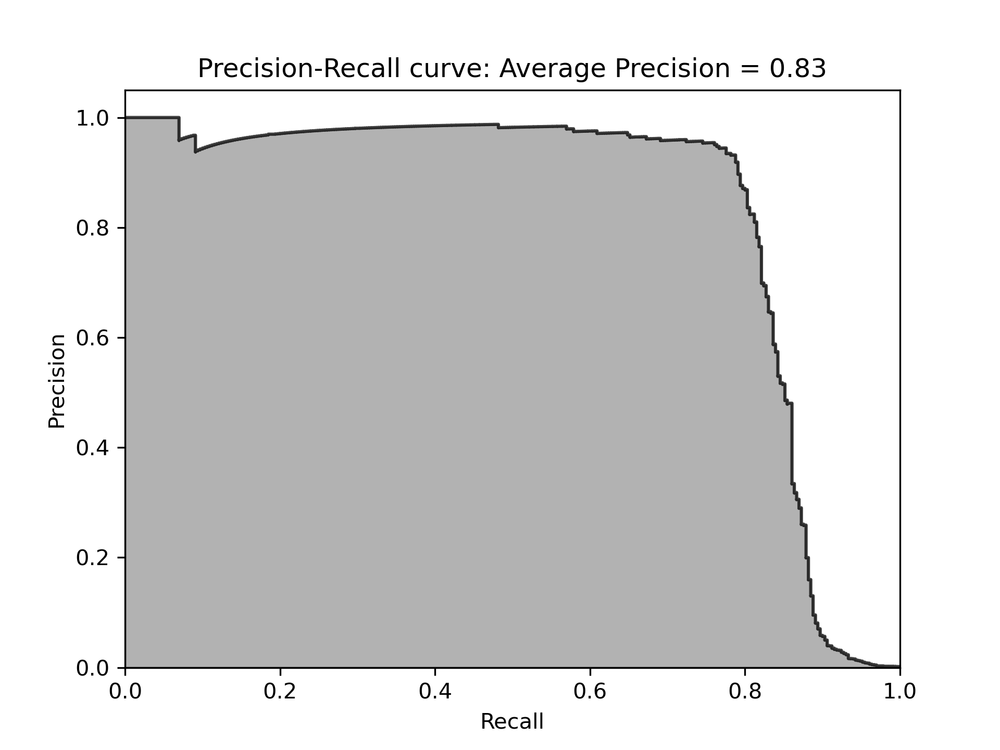
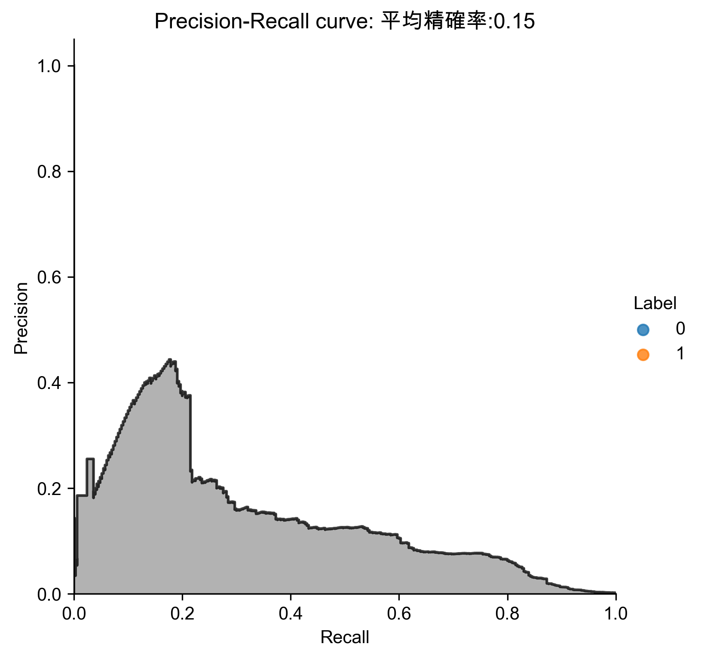
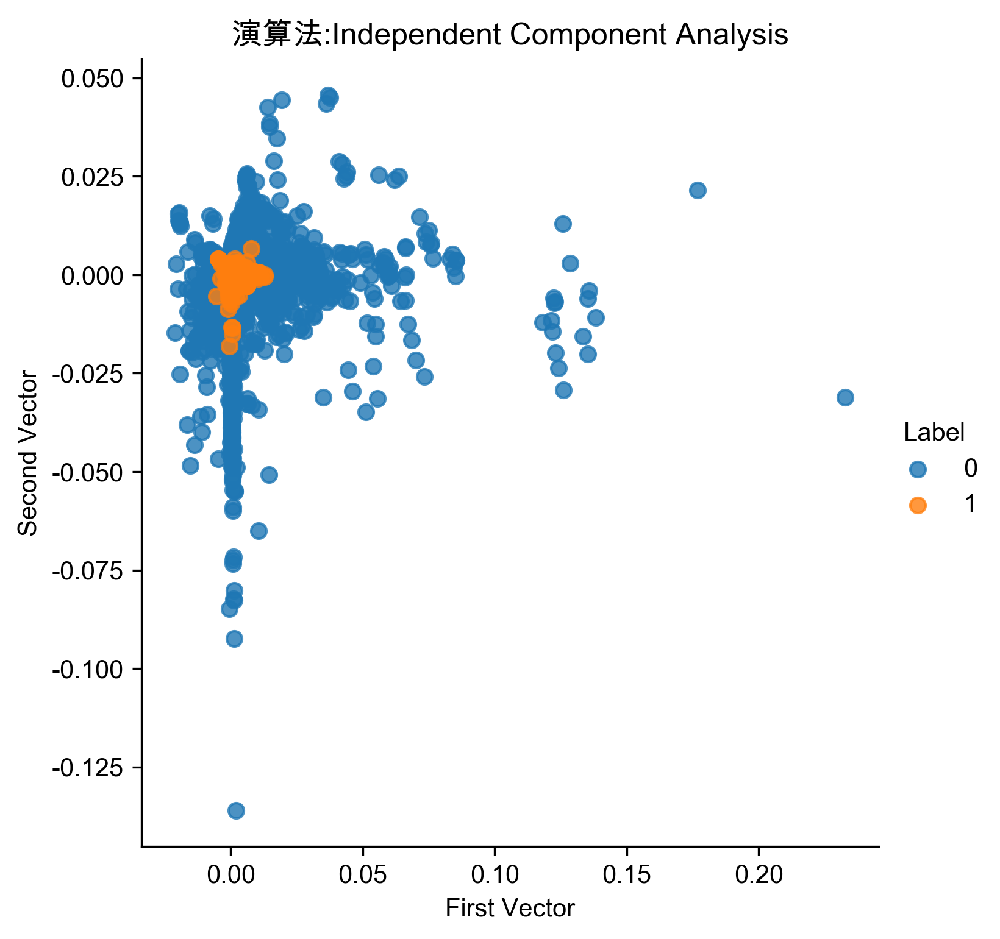

非監督式學習
Table of Contents
1. 非監督式學習
1.1. 目的
非監督式學習演算法嚐試學習 資料的基礎結構 ，而非 做出預測 。
- 將網站訪客進行分類: 40%為男性、愛看漫畫、通常晚上造訪網站….
將一堆圖片分類：cat、automobile、truck、frog、ship…
Figure 1: Caption
1.2. 非監督式學習的任務
如何協助儘量保留非監督式學習資料的重要特徵以利將來進行有效辨識1：
- 降維(dimensionality reduction): 目的是在不損失過多資訊的前提下簡化資料，將多個特徵合併成一個。例如，汽車的里程數與車齡就有合併的依據。
- 異常檢測(Anamaly Detection): 例如，找出不尋常的信用卡交易以防止詐騙、找出製程中有缺陷的產品、將資料組中的離群值挑出來再傳給另一個演算法
新穎檢測(Novelty Detection): 檢測與訓練組中所有實例(instance)看起來不一樣的新實例。前提是訓練組的數據非常乾淨（clean）。例如，有1000張狗的照片，裡面只有10張吉娃娃，則Novelty就 不應該 把這10張標為novelty，而是找出裡面不小心誤放的貓的照片。

Figure 2: Caption
- 關聯規則學習(association rule learning): 超市中售出貨物間的關連，可以將常常一起買的物品擺近一點
2. 非監督式學習的常見演算法
2.1. 降維
There are two major branches of dimensionality reduction. The first is known as linear projection, which involves linearly projecting data from a high- dimensional space to a low-dimensional space. This includes techniques such as2:
- principal component analysis
- singular value decomposition
- random projection.
The second is known as manifold learning, which is also referred to as nonlinear dimensionality reduction. This involves techniques such as2:
- isomap: which learns the curved distance (also called the geodesic distance) between points rather than the Euclidean distance
- multidimensional scaling (MDS)
- locally linear embedding (LLE)
- t-distributed stochastic neighbor embedding (t-SNE)
- dictionary learning
- random trees embedding
- independent component analysis
維度縮減演算法(dimensionality reduction algorithm)將原始的高維度輸入資料映射到一個低維度空間，同時過濾掉與整體資料不那麼相關的特徵，並儘可能保留資料中令人感興趣的特徵。主要有兩個分支：線性投影、非線性投影:
2.1.1. 線性投影
- 主成份分析(Principal component analysis, PCA)
PCA有數種變形：mini-batch變形式PCA(incremental PCA)、非線性變形(kernel PCA)、稀疏變形(sparse PCA)
- 奇異值分解(Singular value decomposition, SVD)
降低原來特徵所組成的矩陣的秩（rank)，使得原來的矩陣可以使用擁有較小的秩的矩陣所組成的線性組合來表示。
- 隨機投影(Random projection)
由高維投影至低維空間，但同時保留點與點間的矩離，可以使用隨機高斯矩陣（random Gaussian matrix)或隨機稀疏矩陣(random sparse matrix)來實現。
2.2. 分群
- K-Means
- DBSCAN
- 階層式分群分析(Hierarchical Cluster Analysis, HCA)
2.3. 異常檢測與新穎檢測
- One-class SVM
- 孤立森林(Isolation Forest)
2.4. 視覺化與降維
- 主成份分析(Principal Component Analysis, PCA)
- kernel PCA
- 局部線性嵌入法(Locally Linear Embedding, LLE)
- t-隨機隣近嵌入法(t-Distributed Stochastic Neighbor Emgedding, t-SNE)
2.5. 關聯規則學習
- 先驗
- Eclat
3. K-Means
3.1. 簡介
從資料中找出 K 個分類的非監督式機器學習演算法
sklearn.datasets.samples_generator import make_blobs X, y_true = make_blobs(n_samples=300, centers=4, cluster_std=0.60, random_state=0) plt.scatter(X[:, 0], X[:, 1], s=50); plt.show()
from sklearn.cluster import KMeans kmeans = KMeans(n_clusters=3) kmeans.fit(X) cluster = kmeans.predict(X) plt.scatter(X[:,0], X[:,1], c=cluster, cmap=plt.cm.Set1) plt.show()
3.2. 應用: 壓縮影像
1: import numpy as np 2: import matplotlib.pyplot as plt # 需安裝 pillow 才能讀 JPEG 3: from matplotlib import image 4: from sklearn.cluster import MiniBatchKMeans 5: 6: # K 值 (要保留的顏色數量) 7: K = 2 8: 9: # 讀取圖片 10: image = image.imread(r'./images/Photo42.jpg') 11: w, h, d = tuple(image.shape) 12: print(w,h,d) 13: image_data = np.reshape(image, (w * h, d))/ 255 14: print(image_data.shape) 15: print(image_data[0]) 16: print(image_data[1]) 17: # 將顏色分類為 K 種 18: kmeans = MiniBatchKMeans(n_clusters=K, batch_size=10) 19: labels = kmeans.fit_predict(image_data) 20: print(labels[:10]) 21: centers = kmeans.cluster_centers_ 22: print(centers[:10]) 23: # 根據分類將顏色寫入新的影像陣列 24: image_compressed = np.zeros(image.shape) 25: label_idx = 0 26: for i in range(w): 27: for j in range(h): 28: image_compressed[i][j] = centers[labels[label_idx]] 29: label_idx += 1 30: 31: plt.imsave(r'images/compressTest.jpg', image_compressed)
480 640 3 (307200, 3) [0.2 0.16470588 0.23921569] [0.21176471 0.17647059 0.25098039] [1 1 1 1 1 1 1 1 1 1] [[0.61803922 0.37591036 0.37204482] [0.23843137 0.15398693 0.18973856]]
Figure 3: Caption
4. Hierarchical clustering
階層式分群法（Hierarchical Clustering）透過一種階層架構的方式，將資料層層反覆地進行分裂或聚合，以產生最後的樹狀結構，常見的方式有兩種：
4.1. 聚合式階層分群法 (Bottom-up, agglomerative)
如果採用聚合的方式，階層式分群法可由樹狀結構的底部開始，將資料或群聚逐次合併。 定義兩個群聚之間的距離
- 單一連結聚合演算法(single-linkage agglomerative algorithm)：群聚與群聚間的距離可以定義為不同群聚中最接近兩點間的距離。
- 完整連結聚合演算法(complete-linkage agglomerative algorithm）：群聚間的距離定義為不同群聚中最遠兩點間的距離，這樣可以保證這兩個集合合併後, 任何一對的距離不會大於 d。
- 平均連結聚合演算法(average-linkage agglomerative algorithm)：群聚間的距離定義為不同群聚間各點與各點間距離總和的平均。沃德法（Ward’s method）：群聚間的距離定義為在將兩群合併後，各點到合併後的群中心的距離平方和。
4.1.1. 分群
- Agglomerative Clustering Sample
from sklearn.cluster import AgglomerativeClustering import numpy as np # randomly chosen dataset X = np.array([[1, 2], [1, 4], [1, 0], [4, 2], [4, 4], [4, 0]]) # here we need to mention the number of clusters # otherwise the result will be a single cluster # containing all the data clustering = AgglomerativeClustering(n_clusters = 2).fit(X) # print the class labels print(clustering.labels_)
[1 1 1 0 0 0]
- 畫圖
import numpy as np import matplotlib.pyplot as plt import scipy.cluster.hierarchy as sch # randomly chosen dataset X = np.array([[1, 2], [1, 4], [1, 0], [4, 2], [4, 4], [4, 0]]) y = np.array(['cat3', 'cat1', 'cat2', 'dog2', 'dog3', 'cat3']) dis=sch.linkage(X,metric='euclidean', method='ward') #metric: 距離的計算方式 #method: 群與群之間的計算方式，”single”, “complete”, “average”, “weighted”, “centroid”, “median”, “ward” sch.dendrogram(dis, labels = y) plt.title('Hierarchical Clustering') plt.show()
[1 1 1 2 2 2] [1 1 1 2 2 2]
4.1.2. 利用距離決定群數，或直接給定群數。
建構好聚落樹狀圖後，我們可以依照距離的切割來進行分類，也可以直接給定想要分類的群數，讓系統自動切割到相對應的距離。
距離切割 所給出的樹狀圖，y軸代表距離，我們可以用特徵之間的距離進行分群的切割。
max_dis=5 clusters=sch.fcluster(dis,max_dis,criterion='distance')
直接給定群數 同時，我們也可以像sklearn一樣，直接給定我們所想要分出的群數。
k=5 clusters=sch.fcluster(dis,k,criterion='maxclust')
4.1.3. 如何評估最佳分群數:K
4.2. 聚合式分群作業
請利用聚合式分群的模型幫 鳶尾花 分類，
- 將階層圖畫出來
- 將K值設為3，輸出分群組果
4.3. 分裂式階層分群法 (Top-down, divisible) :
如果採用分裂的方式，則由樹狀結構的頂端開始，將群聚逐次分裂。 Divisive clustering : Also known as top-down approach. This algorithm also does not require to prespecify the number of clusters. Top-down clustering requires a method for splitting a cluster that contains the whole data and proceeds by splitting clusters recursively until individual data have been splitted into singleton cluster.
5. 信用卡詐欺偵測
- 資料來源: Hands-On Unsupervised Learning Using Python: How to Build Applied Machine Learning Solutions from Ulabled Data
- Code: https://github.com/aapatel09/handson-unsupervised-learning/blob/master/02_end_to_end_machine_learning_project.ipynb
5.1. 資料取得
5.1.1. for Google colab
1: # Define functions to connect to Google and change directories 2: def connectDrive(): 3: from google.colab import drive 4: drive.mount('/content/drive', force_remount=True) 5: 6: def changeDirectory(path): 7: import os 8: original_path = os.getcwd() 9: os.chdir(path) 10: new_path = os.getcwd() 11: print("Original path: ",original_path) 12: print("New path: ",new_path) 13: 14: # Connect to Google Drive 15: connectDrive() 16: 17: # Change path 18: changeDirectory("/content/drive/My Drive/github/handson-unsupervised-learning/")
5.1.2. Import Libraries
1: '''Main''' 2: import numpy as np 3: import pandas as pd 4: import os 5: 6: '''Data Viz''' 7: import matplotlib.pyplot as plt 8: import matplotlib as mpl 9: import seaborn as sns 10: color = sns.color_palette() 11: 12: #%matplotlib inline 13: 14: '''Data Prep''' 15: from sklearn import preprocessing as pp 16: from scipy.stats import pearsonr 17: from sklearn.model_selection import train_test_split 18: from sklearn.model_selection import StratifiedKFold 19: from sklearn.metrics import log_loss 20: from sklearn.metrics import precision_recall_curve, average_precision_score 21: from sklearn.metrics import roc_curve, auc, roc_auc_score 22: from sklearn.metrics import confusion_matrix, classification_report 23: 24: '''Algos''' 25: from sklearn.linear_model import LogisticRegression 26: from sklearn.ensemble import RandomForestClassifier 27: # import xgboost as xgb 28: import lightgbm as lgb
5.2. 資料準備
5.2.1. 取得資料
1: # Acquire Data 2: data = pd.read_csv("https://raw.githubusercontent.com/aapatel09/handson-unsupervised-learning/master/datasets/credit_card_data/correlationMatrix.csv")
5.2.2. 資料探索
1: print(data.shape) 2: print(data.head()) 3: print(data.describe()) 4: print(data.columns)
(30, 31)
Unnamed: 0 Time V1 V2 V3 V4 V5 V6 V7 V8 V9 V10 V11 V12 ... V16 V17 V18 V19 V20 V21 V22 V23 V24 V25 V26 V27 V28 Amount
0 Time 1.00 0.12 -0.01 -0.42 -0.11 0.17 -0.06 0.08 -0.04 -0.01 0.03 -0.25 0.12 ... 0.01 -0.07 0.09 0.03 -0.05 0.04 0.14 0.05 -0.02 -0.23 -0.04 -0.01 -0.01 -0.01
1 V1 0.12 1.00 -0.00 -0.00 -0.00 0.00 0.00 0.00 -0.00 0.00 0.00 0.00 0.00 ... 0.00 -0.00 0.00 0.00 0.00 -0.00 0.00 0.00 -0.00 -0.00 -0.00 0.00 0.00 -0.23
2 V2 -0.01 -0.00 1.00 0.00 -0.00 0.00 0.00 -0.00 -0.00 -0.00 -0.00 0.00 -0.00 ... 0.00 -0.00 0.00 0.00 0.00 0.00 0.00 0.00 -0.00 0.00 0.00 -0.00 -0.00 -0.53
3 V3 -0.42 -0.00 0.00 1.00 -0.00 -0.00 0.00 0.00 -0.00 0.00 0.00 0.00 0.00 ... 0.00 0.00 0.00 0.00 0.00 -0.00 -0.00 -0.00 0.00 0.00 -0.00 0.00 0.00 -0.21
4 V4 -0.11 -0.00 -0.00 -0.00 1.00 -0.00 -0.00 -0.00 0.00 0.00 -0.00 -0.00 -0.00 ... -0.00 -0.00 -0.00 -0.00 -0.00 -0.00 0.00 0.00 0.00 0.00 -0.00 -0.00 -0.00 0.10
[5 rows x 31 columns]
Time V1 V2 V3 V4 V5 V6 V7 ... V22 V23 V24 V25 V26 V27 V28 Amount
count 30.000000 30.000000 30.000000 30.000000 30.000000 30.000000 30.000000 30.000000 ... 30.000000 30.000000 30.000000 30.000000 30.000000 30.000000 30.000000 30.000000
mean 0.006333 0.029667 0.015333 0.012333 0.033000 0.026000 0.038667 0.049333 ... 0.036000 0.031333 0.033000 0.024000 0.032000 0.034000 0.033333 0.013667
std 0.224599 0.189454 0.209593 0.204765 0.184711 0.200062 0.186358 0.194173 ... 0.184234 0.184311 0.182684 0.189202 0.182972 0.182541 0.182593 0.257166
min -0.420000 -0.230000 -0.530000 -0.420000 -0.110000 -0.390000 -0.060000 0.000000 ... -0.060000 -0.110000 -0.020000 -0.230000 -0.040000 -0.010000 -0.010000 -0.530000
25% -0.067500 0.000000 0.000000 0.000000 0.000000 0.000000 0.000000 0.000000 ... 0.000000 0.000000 0.000000 -0.000000 0.000000 0.000000 -0.000000 -0.060000
50% -0.010000 0.000000 0.000000 0.000000 0.000000 0.000000 0.000000 0.000000 ... 0.000000 0.000000 0.000000 0.000000 -0.000000 0.000000 0.000000 -0.000000
75% 0.047500 -0.000000 0.000000 0.000000 -0.000000 0.000000 0.000000 0.000000 ... 0.000000 0.000000 -0.000000 0.000000 0.000000 0.000000 0.000000 0.030000
max 1.000000 1.000000 1.000000 1.000000 1.000000 1.000000 1.000000 1.000000 ... 1.000000 1.000000 1.000000 1.000000 1.000000 1.000000 1.000000 1.000000
[8 rows x 30 columns]
Index(['Unnamed: 0', 'Time', 'V1', 'V2', 'V3', 'V4', 'V5', 'V6', 'V7', 'V8',
'V9', 'V10', 'V11', 'V12', 'V13', 'V14', 'V15', 'V16', 'V17', 'V18',
'V19', 'V20', 'V21', 'V22', 'V23', 'V24', 'V25', 'V26', 'V27', 'V28',
'Amount'],
dtype='object')
- 找出非數值資料
1: import numpy as np 2: import pandas as pd 3: data = pd.read_csv("./credit_card.csv") 4: nanCounter = pd.isna(data).sum() #將np.isnan以pd.isna取代 5: print(nanCounter)
Time 0 V1 0 V2 0 V3 0 V4 0 V5 0 V6 0 V7 0 V8 0 V9 0 V10 0 V11 0 V12 0 V13 0 V14 0 V15 0 V16 0 V17 0 V18 0 V19 0 V20 0 V21 0 V22 0 V23 0 V24 0 V25 0 V26 0 V27 0 V28 0 Amount 0 Class 0 dtype: int64
- 找出缺漏值
1: distinctCounter = data.apply(lambda x: len(x.unique())) 2: print(distinctCounter)
Time 124592 V1 275663 V2 275663 V3 275663 V4 275663 V5 275663 V6 275663 V7 275663 V8 275663 V9 275663 V10 275663 V11 275663 V12 275663 V13 275663 V14 275663 V15 275663 V16 275663 V17 275663 V18 275663 V19 275663 V20 275663 V21 275663 V22 275663 V23 275663 V24 275663 V25 275663 V26 275663 V27 275663 V28 275663 Amount 32767 Class 2 dtype: int64
5.2.3. 建立feature matrix和labels array
1: # Generate feature matrix and labels array 2: dataX = data.copy().drop(['Class'],axis=1) 3: dataY = data['Class'].copy() 4: print(dataX.describe()) 5: print(dataY.head())
Time V1 V2 V3 V4 V5 ... V24 V25 V26 V27 V28 Amount
count 284807.000000 2.848070e+05 2.848070e+05 2.848070e+05 2.848070e+05 2.848070e+05 ... 2.848070e+05 2.848070e+05 2.848070e+05 2.848070e+05 2.848070e+05 284807.000000
mean 94813.859575 1.168375e-15 3.416908e-16 -1.379537e-15 2.074095e-15 9.604066e-16 ... 4.473266e-15 5.340915e-16 1.683437e-15 -3.660091e-16 -1.227390e-16 88.349619
std 47488.145955 1.958696e+00 1.651309e+00 1.516255e+00 1.415869e+00 1.380247e+00 ... 6.056471e-01 5.212781e-01 4.822270e-01 4.036325e-01 3.300833e-01 250.120109
min 0.000000 -5.640751e+01 -7.271573e+01 -4.832559e+01 -5.683171e+00 -1.137433e+02 ... -2.836627e+00 -1.029540e+01 -2.604551e+00 -2.256568e+01 -1.543008e+01 0.000000
25% 54201.500000 -9.203734e-01 -5.985499e-01 -8.903648e-01 -8.486401e-01 -6.915971e-01 ... -3.545861e-01 -3.171451e-01 -3.269839e-01 -7.083953e-02 -5.295979e-02 5.600000
50% 84692.000000 1.810880e-02 6.548556e-02 1.798463e-01 -1.984653e-02 -5.433583e-02 ... 4.097606e-02 1.659350e-02 -5.213911e-02 1.342146e-03 1.124383e-02 22.000000
75% 139320.500000 1.315642e+00 8.037239e-01 1.027196e+00 7.433413e-01 6.119264e-01 ... 4.395266e-01 3.507156e-01 2.409522e-01 9.104512e-02 7.827995e-02 77.165000
max 172792.000000 2.454930e+00 2.205773e+01 9.382558e+00 1.687534e+01 3.480167e+01 ... 4.584549e+00 7.519589e+00 3.517346e+00 3.161220e+01 3.384781e+01 25691.160000
[8 rows x 30 columns]
0 0
1 0
2 0
3 0
4 0
Name: Class, dtype: int64
5.2.4. 特徵工程與特徵選擇
1: correlationMatrix = pd.DataFrame(data=[],index=dataX.columns,columns=dataX.columns) 2: for i in dataX.columns: 3: for j in dataX.columns: 4: correlationMatrix.loc[i,j] = np.round(pearsonr(dataX.loc[:,i],dataX.loc[:,j])[0],2) 5: 6: count_classes = pd.value_counts(data['Class'],sort=True).sort_index() 7: ax = sns.barplot(x=count_classes.index, y=[tuple(count_classes/len(data))[0],tuple(count_classes/len(data))[1]]) 8: ax.set_title('Frequency Percentage by Class') 9: ax.set_xlabel('Class') 10: ax.set_ylabel('Frequency Percentage') 11: #plt.show() 12: plt.savefig('images/creditCardFreq.png', dpi=300)
Figure 4: Caption
5.3. 模型準備
5.3.1. 切分訓練集與測試集
1: X_train, X_test, y_train, y_test = train_test_split(dataX, 2: dataY, test_size=0.33, 3: random_state=2018, stratify=dataY) 4: 5: print(len(X_train)) 6: print(len(X_test))
190820 93987
5.3.2. 選擇成本函數(loss function)
這是監督式分類問題，可以使用二元分類對數損失來計算實際label與模型預測二者間的交叉熵。 \[ log loss=-\frac{1}{N}\sum_{i=1}^N{\sum^M_{j=1}{y_{i,j}log(P_{i,j})} \] 其中
- N為資料數量
- M為label數量
- 若第 \(i\) 項為 \(j\) 類別， \(y_{i,j}\) 值為1，反之為0
- \(P_{i,j}\) 為預測類別項目 \(i\) 為 \(j\) 類別的機率
5.3.3. k-Fold交叉驗證
為了有效評估「模型演算法預測未曾見過的樣本」的表現成效，訓練集可再進一步拆成訓練集與驗證集，可以用 k-fold 交叉驗證來實作。
1: k_fold = StratifiedKFold(n_splits=5,shuffle=True,random_state=2018) 2: print(k_fold)
StratifiedKFold(n_splits=5, random_state=2018, shuffle=True)
5.3.4. Feature scaling
5.4. 模型訓練-1
先從最簡單的分類法做起：Logistic Regression分類
5.4.1. 模型1: Logistic Regression
- 懲罰項設為L2對離群值較不敏感，且會給全部特徵值分配非零權重，較為穩定；L1則會對最重要的特徵值分配最高權重，其他特徵值則給予接近零的權重，較不穩定。
- C為正規化的強度，正規化主要用來解決過度擬合的問題。C為一正浮點數，其值越小，正規化強度越強，預設值為1。
- 模型class_weight設為balanced，目的在告訴演算法這個訓練集的label類別分佈不平衡，在訓練時演算法就會對正向label加大權重。
1: #設定超參數 2: from sklearn.linear_model import LogisticRegression 3: penalty = 'l2' 4: C = 1.0 5: class_weight = 'balanced' 6: random_state = 2018 7: solver = 'liblinear' 8: n_jobs = 1 9: 10: logReg = LogisticRegression(penalty=penalty, C=C, 11: class_weight=class_weight, random_state=random_state, solver=solver, n_jobs=n_jobs) 12: print(logReg)
LogisticRegression(class_weight='balanced', n_jobs=1, random_state=2018,
solver='liblinear')
5.4.2. 訓練模型
1: trainingScores = [] 2: cvScores = [] 3: predictionsBasedOnKFolds = pd.DataFrame(data=[], index=y_train.index,columns=[0,1]) 4: 5: model = logReg 6: print(model) 7: for train_index, cv_index in k_fold.split(np.zeros(len(X_train)),y_train.ravel()): 8: X_train_fold, X_cv_fold = X_train.iloc[train_index,:], X_train.iloc[cv_index,:] 9: y_train_fold, y_cv_fold = y_train.iloc[train_index], y_train.iloc[cv_index] 10: 11: model.fit(X_train_fold, y_train_fold) 12: loglossTraining = log_loss(y_train_fold, model.predict_proba(X_train_fold)[:,1]) 13: trainingScores.append(loglossTraining) 14: 15: predictionsBasedOnKFolds.loc[X_cv_fold.index,:] = model.predict_proba(X_cv_fold) 16: loglossCV = log_loss(y_cv_fold, predictionsBasedOnKFolds.loc[X_cv_fold.index,1]) 17: cvScores.append(loglossCV) 18: 19: print('Training Log Loss: ', loglossTraining) 20: print('CV Log Loss: ', loglossCV) 21: 22: loglossLogisticRegression = log_loss(y_train, predictionsBasedOnKFolds.loc[:,1]) 23: print('Logistic Regression Log Loss: ', loglossLogisticRegression)
完整版程式碼(trainCreditCard-1.py)
1: #!/usr/bin/env python3 2: '''Main''' 3: import numpy as np 4: import pandas as pd 5: import os 6: 7: '''Data Viz''' 8: import matplotlib.pyplot as plt 9: import matplotlib as mpl 10: import seaborn as sns 11: color = sns.color_palette() 12: 13: #%matplotlib inline 14: 15: '''Data Prep''' 16: from sklearn import preprocessing as pp 17: from scipy.stats import pearsonr 18: from sklearn.model_selection import train_test_split 19: from sklearn.model_selection import StratifiedKFold 20: from sklearn.metrics import log_loss 21: from sklearn.metrics import precision_recall_curve, average_precision_score 22: from sklearn.metrics import roc_curve, auc, roc_auc_score 23: from sklearn.metrics import confusion_matrix, classification_report 24: 25: '''Algos''' 26: from sklearn.linear_model import LogisticRegression 27: from sklearn.ensemble import RandomForestClassifier 28: # import xgboost as xgb 29: #import lightgbm as lgb 30: 31: 32: data = pd.read_csv("./credit_card.csv") 33: nanCounter = pd.isna(data).sum() #將np.isnan以pd.isna取代 34: 35: dataX = data.copy().drop(['Class'],axis=1) 36: dataY = data['Class'].copy() 37: 38: X_train, X_test, y_train, y_test = train_test_split(dataX, 39: dataY, test_size=0.33, 40: random_state=2018, stratify=dataY) 41: 42: k_fold = StratifiedKFold(n_splits=5,shuffle=True,random_state=2018) 43: 44: from sklearn.linear_model import LogisticRegression 45: penalty = 'l2' 46: C = 1.0 47: class_weight = 'balanced' 48: random_state = 2018 49: solver = 'liblinear' 50: n_jobs = 1 51: 52: logReg = LogisticRegression(penalty=penalty, C=C, 53: class_weight=class_weight, random_state=random_state, solver=solver, n_jobs=n_jobs) 54: 55: trainingScores = [] 56: cvScores = [] 57: predictionsBasedOnKFolds = pd.DataFrame(data=[], index=y_train.index,columns=[0,1]) 58: 59: model = logReg 60: print(model) 61: for train_index, cv_index in k_fold.split(np.zeros(len(X_train)),y_train.ravel()): 62: X_train_fold, X_cv_fold = X_train.iloc[train_index,:], X_train.iloc[cv_index,:] 63: y_train_fold, y_cv_fold = y_train.iloc[train_index], y_train.iloc[cv_index] 64: 65: model.fit(X_train_fold, y_train_fold) 66: loglossTraining = log_loss(y_train_fold, model.predict_proba(X_train_fold)[:,1]) 67: trainingScores.append(loglossTraining) 68: 69: predictionsBasedOnKFolds.loc[X_cv_fold.index,:] = model.predict_proba(X_cv_fold) 70: loglossCV = log_loss(y_cv_fold, predictionsBasedOnKFolds.loc[X_cv_fold.index,1]) 71: cvScores.append(loglossCV) 72: 73: print('Training Log Loss: ', loglossTraining) 74: print('CV Log Loss: ', loglossCV) 75: 76: loglossLogisticRegression = log_loss(y_train, predictionsBasedOnKFolds.loc[:,1]) 77: print('Logistic Regression Log Loss: ', loglossLogisticRegression) 78:
LogisticRegression(class_weight='balanced', n_jobs=1, random_state=2018,
solver='liblinear')
Training Log Loss: 0.10939361490760419
CV Log Loss: 0.10853402466643607
Training Log Loss: 0.10453309543196382
CV Log Loss: 0.10404365007856392
Training Log Loss: 0.11558188743919326
CV Log Loss: 0.11799026783957066
Training Log Loss: 0.11560666592384615
CV Log Loss: 0.11818686208380477
Training Log Loss: 0.09707169357423985
CV Log Loss: 0.0969591251780277
Logistic Regression Log Loss: 0.10914278596928062
正常而言，Training Log Loss應該會略低於CV Log Loss，二者的值相近，表示未發生過擬合狀況（Training Log Loss很低但CV Log Loss很高）。
5.5. 評估指標
- 召回率(recall): 找出了幾筆在訓練集中的詐欺交易？
- 精確率(precision): 被模型標示為詐欺的交易中，有幾筆為真的詐欺交易
5.5.1. 混淆矩陣(Confusion Matrix)
此例的label分類高度不平衡，使用混淆矩陣意義不大。若預測所有的交易均非詐欺，則結果會有284315筆真陰性、492筆偽陰性、0筆真陽性、0筆偽陽性，精確度為0。
5.5.2. 精確率-召回率曲線
對於類別不平衡的資料集，比較好的效能評估方案為精準率與召回率。
5.5.3. precision=真陽性個數/(真陽性個數+偽陽性個數)
即，所有的陽性預測中，有多少是對的預測？
5.5.4. recall=真陽性個數/(真陽性個數+偽陰性個數)
即，模型能捕捉到多少個詐欺交易？
5.5.5. 取捨
- 高recall低precision: 雖然預測中會有很多真的詐欺，但也會出現太多誤判
- 低precision高recall: 因為標記許多詐欺案例，因此能捕捉到許多詐欺交易，但也有許多被詐欺交易的case並不是真的詐欺
- 權衡：precision-recall curve，可以在每個門檻值下計算出最佳的average precision
5.5.6. 接收者操作特徵(Receiver Operating Characteristic)
ROC將真陽性率當Y軸、將偽陽性率當X軸，真陽性率也可以被當成敏感度，而偽陽性率也乭以被當作l-specificity。
1: preds = pd.concat([y_train,predictionsBasedOnKFolds.loc[:,1]], axis=1) 2: preds.columns = ['trueLabel','prediction'] 3: predictionsBasedOnKFoldsLogisticRegression = preds.copy() 4: 5: precision, recall, thresholds = precision_recall_curve(preds['trueLabel'], 6: preds['prediction']) 7: average_precision = average_precision_score(preds['trueLabel'], 8: preds['prediction']) 9: plt.step(recall, precision, color='k', alpha=0.7, where='post') 10: plt.fill_between(recall, precision, step='post', alpha=0.3, color='k') 11: 12: plt.xlabel('Recall') 13: plt.ylabel('Precision') 14: plt.ylim([0.0, 1.05]) 15: plt.xlim([0.0, 1.0]) 16: plt.title('Precision-Recall curve: Average Precision = {0:0.2f}'.format(average_precision)) 17: plt.savefig('images/prec-recall.png', dpi=300) 18: fpr, tpr, thresholds = roc_curve(preds['trueLabel'],preds['prediction']) 19: areaUnderROC = auc(fpr, tpr) 20: plt.figure() 21: plt.plot(fpr, tpr, color='r', lw=2, label='ROC curve') 22: plt.plot([0, 1], [0, 1], color='k', lw=2, linestyle='--') 23: plt.xlim([0.0, 1.0]) 24: plt.ylim([0.0, 1.05]) 25: plt.xlabel('False Positive Rate') 26: plt.ylabel('True Positive Rate') 27: plt.title('Receiver operating characteristic: \ 28: Area under the curve = {0:0.2f}'.format(areaUnderROC)) 29: plt.legend(loc="lower right") 30: plt.savefig('images/auROC.png', dpi=300) 31:
由圖5可以看出此模型能達到近80%的recall(捕捉到了80%的詐欺交易)，以及近乎70%的precision(所有被標記為詐欺的case中，有70%為真的詐欺，但仍有30$交易被不正確的標記為詐欺)
圖5的auROC曲線充許我們在盡可能保持偽陽率低的情況下，決定有多少的詐欺案例能被捕捉到。
Figure 5: Caption
5.6. 模型訓練#2
5.6.1. 模型#2: 隨機森林
- 設定超參數
- n_estimators = 10: 建立十顆樹並將這十顆樹的預測結果平均
- 這個case有30個特徵值，每顆樹會取總特徵值數的平方根值作為特徵數量，此例每顆樹會取5個特徵值
1: n_estimators = 10 2: max_features = 'auto' 3: max_depth = None 4: min_samples_split = 2 5: min_samples_leaf = 1 6: min_weight_fraction_leaf = 0.0 7: max_leaf_nodes = None 8: bootstrap = True 9: oob_score = False 10: n_jobs = -1 11: random_state = 2018 12: class_weight = 'balanced' 13: 14: RFC = RandomForestClassifier(n_estimators=n_estimators, 15: max_features=max_features, max_depth=max_depth, 16: min_samples_split=min_samples_split, min_samples_leaf=min_samples_leaf, 17: min_weight_fraction_leaf=min_weight_fraction_leaf, 18: max_leaf_nodes=max_leaf_nodes, bootstrap=bootstrap, 19: oob_score=oob_score, n_jobs=n_jobs, random_state=random_state, 20: class_weight=class_weight)
- 訓練模型
執行k-fold交叉驗證五次，每次用4/5訓練集做為訓練、1/5作為預測
1: trainingScores = [] 2: cvScores = [] 3: predictionsBasedOnKFolds = pd.DataFrame(data=[], 4: index=y_train.index,columns=[0,1]) 5: 6: model = RFC 7: 8: for train_index, cv_index in k_fold.split(np.zeros(len(X_train)), 9: y_train.ravel()): 10: X_train_fold, X_cv_fold = X_train.iloc[train_index,:], \ 11: X_train.iloc[cv_index,:] 12: y_train_fold, y_cv_fold = y_train.iloc[train_index], \ 13: y_train.iloc[cv_index] 14: 15: model.fit(X_train_fold, y_train_fold) 16: loglossTraining = log_loss(y_train_fold, \ 17: model.predict_proba(X_train_fold)[:,1]) 18: trainingScores.append(loglossTraining) 19: 20: predictionsBasedOnKFolds.loc[X_cv_fold.index,:] = \ 21: model.predict_proba(X_cv_fold) 22: loglossCV = log_loss(y_cv_fold, \ 23: predictionsBasedOnKFolds.loc[X_cv_fold.index,1]) 24: cvScores.append(loglossCV) 25: 26: print('Training Log Loss: ', loglossTraining) 27: print('CV Log Loss: ', loglossCV) 28: 29: loglossRandomForestsClassifier = log_loss(y_train, 30: predictionsBasedOnKFolds.loc[:,1]) 31: print('Random Forests Log Loss: ', loglossRandomForestsClassifier)
Training Log Loss: 0.0004566021382946814 CV Log Loss: 0.009090297680965084 Training Log Loss: 0.0004082945215246006 CV Log Loss: 0.01262610549231437 Training Log Loss: 0.00038853441430403824 CV Log Loss: 0.010809571632524845 Training Log Loss: 0.0003910895192496393 CV Log Loss: 0.006617990788005817 Training Log Loss: 0.00042118560357566983 CV Log Loss: 0.013463844755711074 Random Forests Log Loss: 0.010521562069904237
- 可以看出Training Log Loss明顯低於CV Log Loss，表示可能有過擬合的現象
- 但這兩個Loss指標仍明顯優於Logistic Regression模型(大概為後者的1/10)
- 評估結果
1: plt.cla() 2: preds = pd.concat([y_train,predictionsBasedOnKFolds.loc[:,1]], axis=1) 3: preds.columns = ['trueLabel','prediction'] 4: predictionsBasedOnKFoldsRandomForests = preds.copy() 5: 6: precision, recall, thresholds = precision_recall_curve(preds['trueLabel'], 7: preds['prediction']) 8: average_precision = average_precision_score(preds['trueLabel'], 9: preds['prediction']) 10: 11: plt.step(recall, precision, color='k', alpha=0.7, where='post') 12: plt.fill_between(recall, precision, step='post', alpha=0.3, color='k') 13: 14: plt.xlabel('Recall') 15: plt.ylabel('Precision') 16: plt.ylim([0.0, 1.05]) 17: plt.xlim([0.0, 1.0]) 18: 19: plt.title('Precision-Recall curve: Average Precision = {0:0.2f}'.format( 20: average_precision)) 21: plt.savefig('images/prec-recall-2.png', dpi=300) 22: 23: fpr, tpr, thresholds = roc_curve(preds['trueLabel'],preds['prediction']) 24: areaUnderROC = auc(fpr, tpr) 25: 26: plt.figure() 27: plt.plot(fpr, tpr, color='r', lw=2, label='ROC curve') 28: plt.plot([0, 1], [0, 1], color='k', lw=2, linestyle='--') 29: plt.xlim([0.0, 1.0]) 30: plt.ylim([0.0, 1.05]) 31: plt.xlabel('False Positive Rate') 32: plt.ylabel('True Positive Rate') 33: plt.title('Receiver operating characteristic: \ 34: Area under the curve = {0:0.2f}'.format( 35: areaUnderROC)) 36: plt.legend(loc="lower right") 37: plt.savefig('images/auROC-2.png', dpi=300)
Figure 6: Caption
- 但隨機森林的auROC為0.92，不如Logistic Regression模型的0.97
Figure 7: Caption
5.6.2. 模型#3: Gradient Boosting Machine (XGBoost)
Gradient boosting有兩種版本: XBGoost和微軟的LightGBM(效能較快)
- 設定超參數
1: params_xGB = { 2: 'nthread':16, #number of cores 3: 'learning rate': 0.3, #range 0 to 1, default 0.3 4: 'gamma': 0, #range 0 to infinity, default 0 5: # increase to reduce complexity (increase bias, reduce variance) 6: 'max_depth': 6, #range 1 to infinity, default 6 7: 'min_child_weight': 1, #range 0 to infinity, default 1 8: 'max_delta_step': 0, #range 0 to infinity, default 0 9: 'subsample': 1.0, #range 0 to 1, default 1 10: # subsample ratio of the training examples 11: 'colsample_bytree': 1.0, #range 0 to 1, default 1 12: # subsample ratio of features 13: 'objective':'binary:logistic', 14: 'num_class':1, 15: 'eval_metric':'logloss', 16: 'seed':2018, 17: 'silent':1 18: }
- 訓練模型
1: trainingScores = [] 2: cvScores = [] 3: predictionsBasedOnKFolds = pd.DataFrame(data=[], 4: index=y_train.index,columns=['prediction']) 5: 6: for train_index, cv_index in k_fold.split(np.zeros(len(X_train)), y_train.ravel()): 7: X_train_fold, X_cv_fold = X_train.iloc[train_index,:], X_train.iloc[cv_index,:] 8: y_train_fold, y_cv_fold = y_train.iloc[train_index], y_train.iloc[cv_index] 9: 10: dtrain = xgb.DMatrix(data=X_train_fold, label=y_train_fold) 11: dCV = xgb.DMatrix(data=X_cv_fold) 12: 13: bst = xgb.cv(params_xGB, dtrain, num_boost_round=2000, 14: nfold=5, early_stopping_rounds=200, verbose_eval=50) 15: 16: best_rounds = np.argmin(bst['test-logloss-mean']) 17: bst = xgb.train(params_xGB, dtrain, best_rounds) 18: 19: loglossTraining = log_loss(y_train_fold, bst.predict(dtrain)) 20: trainingScores.append(loglossTraining) 21: 22: predictionsBasedOnKFolds.loc[X_cv_fold.index,'prediction'] = bst.predict(dCV) 23: loglossCV = log_loss(y_cv_fold, predictionsBasedOnKFolds.loc[X_cv_fold.index,'prediction']) 24: cvScores.append(loglossCV) 25: 26: print('Training Log Loss: ', loglossTraining) 27: print('CV Log Loss: ', loglossCV) 28: 29: loglossXGBoostGradientBoosting = log_loss(y_train, predictionsBasedOnKFolds.loc[:,'prediction']) 30: print('XGBoost Gradient Boosting Log Loss: ', loglossXGBoostGradientBoosting)
完整程式版(trainXGBoost.py)
1: '''Main''' 2: import numpy as np 3: import pandas as pd 4: import os 5: 6: '''Data Viz''' 7: import matplotlib.pyplot as plt 8: import matplotlib as mpl 9: import seaborn as sns 10: color = sns.color_palette() 11: 12: #%matplotlib inline 13: 14: '''Data Prep''' 15: from sklearn import preprocessing as pp 16: from scipy.stats import pearsonr 17: from sklearn.model_selection import train_test_split 18: from sklearn.model_selection import StratifiedKFold 19: from sklearn.metrics import log_loss 20: from sklearn.metrics import precision_recall_curve, average_precision_score 21: from sklearn.metrics import roc_curve, auc, roc_auc_score 22: from sklearn.metrics import confusion_matrix, classification_report 23: 24: '''Algos''' 25: from sklearn.linear_model import LogisticRegression 26: from sklearn.ensemble import RandomForestClassifier 27: import xgboost as xgb 28: import lightgbm as lgb 29: 30: 31: data = pd.read_csv("./credit_card.csv") 32: nanCounter = pd.isna(data).sum() #將np.isnan以pd.isna取代 33: 34: dataX = data.copy().drop(['Class'],axis=1) 35: dataY = data['Class'].copy() 36: 37: X_train, X_test, y_train, y_test = train_test_split(dataX, 38: dataY, test_size=0.33, 39: random_state=2018, stratify=dataY) 40: 41: k_fold = StratifiedKFold(n_splits=5,shuffle=True,random_state=2018) 42: 43: # 超參數 44: params_xGB = { 45: 'nthread':16, #number of cores 46: 'learning_rate':0.3, #range 0 to 1, default 0.3 47: 'gamma':0, #range 0 to infinity, default 0 48: # increase to reduce complexity (increase bias, reduce variance) 49: 'max_depth': 6, #range 1 to infinity, default 6 50: 'min_child_weight': 1, #range 0 to infinity, default 1 51: 'max_delta_step': 0, #range 0 to infinity, default 0 52: 'subsample': 1.0, #range 0 to 1, default 1 53: # subsample ratio of the training examples 54: 'colsample_bytree': 1.0, #range 0 to 1, default 1 55: # subsample ratio of features 56: 'objective':'binary:logistic', 57: 'num_class':1, 58: 'eval_metric':'logloss', 59: 'seed':2018, 60: 'silent':1 61: } 62: 63: # 訓練模型 64: trainingScores = [] 65: cvScores = [] 66: predictionsBasedOnKFolds = pd.DataFrame(data=[], 67: index=y_train.index,columns=['prediction']) 68: 69: for train_index, cv_index in k_fold.split(np.zeros(len(X_train)), y_train.ravel()): 70: X_train_fold, X_cv_fold = X_train.iloc[train_index,:], X_train.iloc[cv_index,:] 71: y_train_fold, y_cv_fold = y_train.iloc[train_index], y_train.iloc[cv_index] 72: 73: dtrain = xgb.DMatrix(data=X_train_fold, label=y_train_fold) 74: dCV = xgb.DMatrix(data=X_cv_fold) 75: 76: bst = xgb.cv(params_xGB, dtrain, num_boost_round=2000, 77: nfold=5, early_stopping_rounds=200, verbose_eval=50) 78: 79: best_rounds = np.argmin(bst['test-logloss-mean']) 80: bst = xgb.train(params_xGB, dtrain, best_rounds) 81: 82: loglossTraining = log_loss(y_train_fold, bst.predict(dtrain)) 83: trainingScores.append(loglossTraining) 84: 85: predictionsBasedOnKFolds.loc[X_cv_fold.index,'prediction'] = bst.predict(dCV) 86: loglossCV = log_loss(y_cv_fold, predictionsBasedOnKFolds.loc[X_cv_fold.index,'prediction']) 87: cvScores.append(loglossCV) 88: 89: print('Training Log Loss: ', loglossTraining) 90: print('CV Log Loss: ', loglossCV) 91: 92: loglossXGBoostGradientBoosting = log_loss(y_train, predictionsBasedOnKFolds.loc[:,'prediction']) 93: print('XGBoost Gradient Boosting Log Loss: ', loglossXGBoostGradientBoosting) 94: 95:
Training Log Loss: 0.0009698748139954727 CV Log Loss: 0.0023983441021591216 Training Log Loss: 0.000872351723518117 CV Log Loss: 0.0031189630212595408 Training Log Loss: 0.0007123358367720159 CV Log Loss: 0.002299779731184769 Training Log Loss: 0.0009144685956787081 CV Log Loss: 0.0026294304116304865 Training Log Loss: 0.0005772056222738951 CV Log Loss: 0.003686224309306172 XGBoost Gradient Boosting Log Loss: 0.002826548315108018
會跑很久….中間會出現Warning Training Log Loss與CV Log Loss都較Random Forest有巨大改善
- 評估結果
1: plt.cla() 2: preds = pd.concat([y_train,predictionsBasedOnKFolds.loc[:,'prediction']], axis=1) 3: preds.columns = ['trueLabel','prediction'] 4: predictionsBasedOnKFoldsXGBoostGradientBoosting = preds.copy() 5: 6: precision, recall, thresholds = \ 7: precision_recall_curve(preds['trueLabel'],preds['prediction']) 8: average_precision = \ 9: average_precision_score(preds['trueLabel'],preds['prediction']) 10: 11: plt.step(recall, precision, color='k', alpha=0.7, where='post') 12: plt.fill_between(recall, precision, step='post', alpha=0.3, color='k') 13: 14: plt.xlabel('Recall') 15: plt.ylabel('Precision') 16: plt.ylim([0.0, 1.05]) 17: plt.xlim([0.0, 1.0]) 18: 19: plt.title('Precision-Recall curve: Average Precision = {0:0.2f}'.format( 20: average_precision)) 21: plt.savefig('images/prec-recall-3.png', dpi=300) 22: 23: fpr, tpr, thresholds = roc_curve(preds['trueLabel'],preds['prediction']) 24: areaUnderROC = auc(fpr, tpr) 25: 26: plt.figure() 27: plt.plot(fpr, tpr, color='r', lw=2, label='ROC curve') 28: plt.plot([0, 1], [0, 1], color='k', lw=2, linestyle='--') 29: plt.xlim([0.0, 1.0]) 30: plt.ylim([0.0, 1.05]) 31: plt.xlabel('False Positive Rate') 32: plt.ylabel('True Positive Rate') 33: plt.title('Receiver operating characteristic: \ 34: Area under the curve = {0:0.2f}'.format(areaUnderROC)) 35: plt.legend(loc="lower right") 36: plt.savefig('images/auROC-3.png', dpi=300) 37:

Figure 8: Caption
- 但隨機森林的auROC為0.92，不如Logistic Regression模型的0.97
Figure 9: Caption
5.6.3. 模型#4: Gradient Boosting Machine (LightGBM)
- 讀資料
1: '''Main''' 2: import numpy as np 3: import pandas as pd 4: import os 5: 6: '''Data Viz''' 7: import matplotlib.pyplot as plt 8: import matplotlib as mpl 9: import seaborn as sns 10: color = sns.color_palette() 11: 12: #%matplotlib inline 13: 14: '''Data Prep''' 15: from sklearn import preprocessing as pp 16: from scipy.stats import pearsonr 17: from sklearn.model_selection import train_test_split 18: from sklearn.model_selection import StratifiedKFold 19: from sklearn.metrics import log_loss 20: from sklearn.metrics import precision_recall_curve, average_precision_score 21: from sklearn.metrics import roc_curve, auc, roc_auc_score 22: from sklearn.metrics import confusion_matrix, classification_report 23: 24: '''Algos''' 25: from sklearn.linear_model import LogisticRegression 26: from sklearn.ensemble import RandomForestClassifier 27: import xgboost as xgb 28: import lightgbm as lgb 29: 30: 31: data = pd.read_csv("./credit_card.csv") 32: nanCounter = pd.isna(data).sum() #將np.isnan以pd.isna取代 33: 34: dataX = data.copy().drop(['Class'],axis=1) 35: dataY = data['Class'].copy() 36: 37: X_train, X_test, y_train, y_test = train_test_split(dataX, 38: dataY, test_size=0.33, 39: random_state=2018, stratify=dataY) 40: 41: k_fold = StratifiedKFold(n_splits=5,shuffle=True,random_state=2018) 42:
- 設定超參數
1: params_lightGB = { 2: 'task': 'train', 3: 'num_class':1, 4: 'boosting': 'gbdt', 5: 'objective': 'binary', 6: 'metric': 'binary_logloss', 7: 'metric_freq':50, 8: 'is_training_metric':False, 9: 'max_depth':4, 10: 'num_leaves': 31, 11: 'learning_rate': 0.01, 12: 'feature_fraction': 1.0, 13: 'bagging_fraction': 1.0, 14: 'bagging_freq': 0, 15: 'bagging_seed': 2018, 16: 'verbose': -1, 17: 'num_threads':16 18: }
- 訓練模型
1: 2: trainingScores = [] 3: cvScores = [] 4: predictionsBasedOnKFolds = pd.DataFrame(data=[], 5: index=y_train.index,columns=['prediction']) 6: 7: for train_index, cv_index in k_fold.split(np.zeros(len(X_train)), 8: y_train.ravel()): 9: X_train_fold, X_cv_fold = X_train.iloc[train_index,:], \ 10: X_train.iloc[cv_index,:] 11: y_train_fold, y_cv_fold = y_train.iloc[train_index], \ 12: y_train.iloc[cv_index] 13: 14: lgb_train = lgb.Dataset(X_train_fold, y_train_fold) 15: lgb_eval = lgb.Dataset(X_cv_fold, y_cv_fold, reference=lgb_train) 16: gbm = lgb.train(params_lightGB, lgb_train, num_boost_round=2000, 17: valid_sets=lgb_eval, early_stopping_rounds=200) 18: 19: loglossTraining = log_loss(y_train_fold, \ 20: gbm.predict(X_train_fold, num_iteration=gbm.best_iteration)) 21: trainingScores.append(loglossTraining) 22: 23: predictionsBasedOnKFolds.loc[X_cv_fold.index,'prediction'] = \ 24: gbm.predict(X_cv_fold, num_iteration=gbm.best_iteration) 25: loglossCV = log_loss(y_cv_fold, \ 26: predictionsBasedOnKFolds.loc[X_cv_fold.index,'prediction']) 27: cvScores.append(loglossCV) 28: 29: print('Training Log Loss: ', loglossTraining) 30: print('CV Log Loss: ', loglossCV) 31: 32: loglossLightGBMGradientBoosting = \ 33: log_loss(y_train, predictionsBasedOnKFolds.loc[:,'prediction']) 34: print('LightGBM Gradient Boosting Log Loss: ', loglossLightGBMGradientBoosting)
Training Log Loss: 0.0003947673377921407 CV Log Loss: 0.002662918492530588 Training Log Loss: 0.0004295118076208872 CV Log Loss: 0.002917044383361585 Training Log Loss: 0.0005351430169195703 CV Log Loss: 0.0026303365660141687 Training Log Loss: 0.0006123639756391712 CV Log Loss: 0.003627373853307207 LightGBM Gradient Boosting Log Loss: 0.002816067500582217
- 評估結果
1: plt.cla() 2: reds = pd.concat([y_train,predictionsBasedOnKFolds.loc[:,'prediction']], axis=1) 3: preds.columns = ['trueLabel','prediction'] 4: predictionsBasedOnKFoldsLightGBMGradientBoosting = preds.copy() 5: 6: precision, recall, thresholds = \ 7: precision_recall_curve(preds['trueLabel'],preds['prediction']) 8: average_precision = \ 9: average_precision_score(preds['trueLabel'],preds['prediction']) 10: 11: plt.step(recall, precision, color='k', alpha=0.7, where='post') 12: plt.fill_between(recall, precision, step='post', alpha=0.3, color='k') 13: plt.savefig('images/prec-recall-4.png', dpi=300) 14: plt.xlabel('Recall') 15: plt.ylabel('Precision') 16: plt.ylim([0.0, 1.05]) 17: plt.xlim([0.0, 1.0]) 18: 19: plt.title('Precision-Recall curve: Average Precision = {0:0.2f}'.format( 20: average_precision)) 21: 22: fpr, tpr, thresholds = roc_curve(preds['trueLabel'],preds['prediction']) 23: areaUnderROC = auc(fpr, tpr) 24: 25: plt.figure() 26: plt.plot(fpr, tpr, color='r', lw=2, label='ROC curve') 27: plt.plot([0, 1], [0, 1], color='k', lw=2, linestyle='--') 28: plt.xlim([0.0, 1.0]) 29: plt.ylim([0.0, 1.05]) 30: plt.xlabel('False Positive Rate') 31: plt.ylabel('True Positive Rate') 32: plt.title('Receiver operating characteristic: \ 33: Area under the curve = {0:0.2f}'.format(areaUnderROC)) 34: plt.legend(loc="lower right") 35: plt.savefig('images/auROC-4.png', dpi=300)
結果跑不出來，用session跑，除錯有問題，看不到過程

Figure 10: Caption
- 但隨機森林的auROC為0.92，不如Logistic Regression模型的0.97

Figure 11: Caption
5.7. Stack
可以將不同家族的模型Stack來改善單一模型的效能，從每個單一模型中取得k-fold交叉驗證的預測結果（第一層預測），將這些預測結果加到原始訓練資料集中，再採用k-fold交叉驗證，利用原始的特徵和第一層預測資料集進行訓練。
5.7.1. 合併
1: # Without XGBoost 2: predictionsBasedOnKFoldsFourModels = pd.DataFrame(data=[],index=y_train.index) 3: predictionsBasedOnKFoldsFourModels = predictionsBasedOnKFoldsFourModels.join( 4: predictionsBasedOnKFoldsLogisticRegression['prediction'].astype(float), \ 5: how='left').join(predictionsBasedOnKFoldsRandomForests['prediction'] \ 6: .astype(float),how='left',rsuffix="2").join( \ 7: predictionsBasedOnKFoldsLightGBMGradientBoosting['prediction'].astype(float), \ 8: how='left',rsuffix="4") 9: predictionsBasedOnKFoldsFourModels.columns = \ 10: ['predsLR','predsRF','predsLightGBM'] 11: 12: predictionsBasedOnKFoldsFourModels = pd.DataFrame(data=[],index=y_train.index) 13: predictionsBasedOnKFoldsFourModels = predictionsBasedOnKFoldsFourModels.join( 14: predictionsBasedOnKFoldsLogisticRegression['prediction'].astype(float), \ 15: how='left').join(predictionsBasedOnKFoldsRandomForests['prediction'] \ 16: .astype(float),how='left',rsuffix="2").join( \ 17: predictionsBasedOnKFoldsXGBoostGradientBoosting['prediction'].astype(float), \ 18: how='left',rsuffix="3").join( \ 19: predictionsBasedOnKFoldsLightGBMGradientBoosting['prediction'].astype(float), \ 20: how='left',rsuffix="4") 21: predictionsBasedOnKFoldsFourModels.columns = \ 22: ['predsLR','predsRF','predsXGB','predsLightGBM'] 23: X_trainWithPredictions = \ 24: X_train.merge(predictionsBasedOnKFoldsFourModels, 25: left_index=True,right_index=True) 26: params_lightGB = { 27: 'task': 'train', 28: 'num_class':1, 29: 'boosting': 'gbdt', 30: 'objective': 'binary', 31: 'metric': 'binary_logloss', 32: 'metric_freq':50, 33: 'is_training_metric':False, 34: 'max_depth':4, 35: 'num_leaves': 31, 36: 'learning_rate': 0.01, 37: 'feature_fraction': 1.0, 38: 'bagging_fraction': 1.0, 39: 'bagging_freq': 0, 40: 'bagging_seed': 2018, 41: 'verbose': -1, 42: 'num_threads':16 43: }
6. 降維
6.1. 讀入資料
1: '''Main''' 2: import numpy as np 3: import pandas as pd 4: import os, time, pickle, gzip 5: import datetime 6: 7: '''Data Prep''' 8: from sklearn import preprocessing as pp 9: 10: '''Data Viz''' 11: import matplotlib.pyplot as plt 12: import matplotlib as mpl 13: import seaborn as sns 14: color = sns.color_palette() 15: # Load the datasets 16: current_path = os.getcwd() 17: file = os.path.sep.join(['', 'dataset', 'mnist.pkl.gz']) 18: 19: f = gzip.open(current_path+file, 'rb') 20: train_set, validation_set, test_set = pickle.load(f, encoding='latin1') 21: f.close() 22: 23: X_train, y_train = train_set[0], train_set[1] 24: X_validation, y_validation = validation_set[0], validation_set[1] 25: X_test, y_test = test_set[0], test_set[1] 26: 27: # Create Pandas DataFrames from the datasets 28: train_index = range(0,len(X_train)) 29: validation_index = range(len(X_train), \ 30: len(X_train)+len(X_validation)) 31: test_index = range(len(X_train)+len(X_validation), \ 32: len(X_train)+len(X_validation)+len(X_test)) 33: 34: X_train = pd.DataFrame(data=X_train,index=train_index) 35: y_train = pd.Series(data=y_train,index=train_index) 36: 37: X_validation = pd.DataFrame(data=X_validation,index=validation_index) 38: y_validation = pd.Series(data=y_validation,index=validation_index) 39: 40: X_test = pd.DataFrame(data=X_test,index=test_index) 41: y_test = pd.Series(data=y_test,index=test_index) 42: 43: def one_hot(series): 44: label_binarizer = pp.LabelBinarizer() 45: label_binarizer.fit(range(max(series)+1)) 46: return label_binarizer.transform(series) 47: # Define reversal of one-hot encoder function 48: def reverse_one_hot(originalSeries, newSeries): 49: label_binarizer = pp.LabelBinarizer() 50: label_binarizer.fit(range(max(originalSeries)+1)) 51: return label_binarizer.inverse_transform(newSeries) 52: # Create one-hot vectors for the labels 53: y_train_oneHot = one_hot(y_train) 54: y_validation_oneHot = one_hot(y_validation) 55: y_test_oneHot = one_hot(y_test)
6.2. 線性投影
6.3. 主成分分析
6.3.1. PCA
PCA會找資料在低維度空間的表示方法，同時盡可能保留資料的變異性。
1: # Principal Component Analysis 2: from sklearn.decomposition import PCA 3: 4: n_components = 784 5: whiten = False 6: random_state = 2018 7: 8: pca = PCA(n_components=n_components, whiten=whiten, \ 9: random_state=random_state) 10: 11: X_train_PCA = pca.fit_transform(X_train) 12: X_train_PCA = pd.DataFrame(data=X_train_PCA, index=train_index) 13: # Percentage of Variance Captured by 784 principal components 14: print("Variance Explained by all 784 principal components: ", \ 15: sum(pca.explained_variance_ratio_)) 16: # Percentage of Variance Captured by X principal components 17: importanceOfPrincipalComponents = \ 18: pd.DataFrame(data=pca.explained_variance_ratio_) 19: importanceOfPrincipalComponents = importanceOfPrincipalComponents.T 20: 21: print('Variance Captured by First 10 Principal Components: ', 22: importanceOfPrincipalComponents.loc[:,0:9].sum(axis=1).values) 23: print('Variance Captured by First 20 Principal Components: ', 24: importanceOfPrincipalComponents.loc[:,0:19].sum(axis=1).values) 25: print('Variance Captured by First 50 Principal Components: ', 26: importanceOfPrincipalComponents.loc[:,0:49].sum(axis=1).values) 27: print('Variance Captured by First 100 Principal Components: ', 28: importanceOfPrincipalComponents.loc[:,0:99].sum(axis=1).values) 29: print('Variance Captured by First 200 Principal Components: ', 30: importanceOfPrincipalComponents.loc[:,0:199].sum(axis=1).values) 31: print('Variance Captured by First 300 Principal Components: ', 32: importanceOfPrincipalComponents.loc[:,0:299].sum(axis=1).values)
Variance Explained by all 784 principal components: 0.9999999571231906 Variance Captured by First 10 Principal Components: [0.48876157] Variance Captured by First 20 Principal Components: [0.6439795] Variance Captured by First 50 Principal Components: [0.8248605] Variance Captured by First 100 Principal Components: [0.91465825] Variance Captured by First 200 Principal Components: [0.9665006] Variance Captured by First 300 Principal Components: [0.9862488]
由結果看，若將MNIST的原始784個特徵值縮減至300個，仍有近99%的解釋力，即，能捕捉到99%的變異量。PCA能讓我們縮減原始資料的維度，同時保持最多的顯著資訊。
如果只拿第1、第二個主成份特徵來進行預測，圖示結果如下：
1: # Define scatterplot function 2: def scatterPlot(xDF, yDF, algoName): 3: tempDF = pd.DataFrame(data=xDF.loc[:,0:1], index=xDF.index) 4: tempDF = pd.concat((tempDF,yDF), axis=1, join="inner") 5: tempDF.columns = ["First Vector", "Second Vector", "Label"] 6: sns.lmplot(x="First Vector", y="Second Vector", hue="Label", \ 7: data=tempDF, fit_reg=False) 8: ax = plt.gca() 9: ax.set_title("Separation of Observations using "+algoName) 10: 11: # View scatterplot 12: scatterPlot(X_train_PCA, y_train, "PCA") 13: #plt.show() 14: plt.savefig('images/PCA-MNIST-1.png', dpi=300)
Figure 12: Caption
由上圖可以看出PCA光找出最有價值的兩個特徵值就能對大致區分數0~9的不同類別，這在非監督式學習中是大分有用的。當資料集有數百萬個特徵、數十億筆資籵時，PCA可以大幅減少機器學習的訓練時間。
6.3.2. Incremental PCA
當資枓集大到無法載入記憶體時，可以小批次的遞增使用PCA，將資料集逐批送入記憶體，其結果與PCA相仿。
1: # Incremental PCA 2: plt.cla() 3: from sklearn.decomposition import IncrementalPCA 4: 5: n_components = 784 6: batch_size = none 7: 8: incrementalPCA = IncrementalPCA(n_components=n_components, \ 9: batch_size=batch_size) 10: 11: X_train_incrementalPCA = incrementalPCA.fit_transform(X_train) 12: X_train_incrementalPCA = \ 13: pd.DataFrame(data=X_train_incrementalPCA, index=train_index) 14: 15: X_validation_incrementalPCA = incrementalPCA.transform(X_validation) 16: X_validation_incrementalPCA = \ 17: pd.DataFrame(data=X_validation_incrementalPCA, index=validation_index) 18: 19: scatterPlot(X_train_incrementalPCA, y_train, "Incremental PCA") 20: plt.savefig('images/PCA-MNIST-2.png', dpi=300)
Figure 13: Caption
6.3.3. Sparse PCA
一般的PCA希望儘量縮小特徵空間，提高空間中資枓點的密度。但有些機器學習可能需要讓資料點的密度更稀疏，此時可使用Sparse PCA，其稀疏程度中aplha控制。
- 計算速度會較慢，故只取10000個樣本訓練
1: # Sparse PCA 2: plt.cla() 3: from sklearn.decomposition import SparsePCA 4: 5: n_components = 100 6: alpha = 0.0001 7: random_state = 2018 8: n_jobs = -1 9: 10: sparsePCA = SparsePCA(n_components=n_components, \ 11: alpha=alpha, random_state=random_state, n_jobs=n_jobs) 12: 13: sparsePCA.fit(X_train.loc[:10000,:]) 14: X_train_sparsePCA = sparsePCA.transform(X_train) 15: X_train_sparsePCA = pd.DataFrame(data=X_train_sparsePCA, index=train_index) 16: 17: X_validation_sparsePCA = sparsePCA.transform(X_validation) 18: X_validation_sparsePCA = \ 19: pd.DataFrame(data=X_validation_sparsePCA, index=validation_index) 20: 21: scatterPlot(X_train_sparsePCA, y_train, "Sparse PCA") 22: plt.savefig('images/PCA-MNIST-3.png', dpi=300) 23:
Figure 14: Caption
6.3.4. Kernel PCA
非線性投影PCA，透過學習相似度函數(kernel function)，kernel PCA找出大多數資枓點聚集的隱含特徵空間，使用kernel PCA需要設定預期的成分數量、kernel的型態、kernel的係數(gamma)，常見的kernel PCA有radial basis function kernel、RBF kernel。
1: # Kernel PCA 2: plt.cla() 3: from sklearn.decomposition import KernelPCA 4: 5: n_components = 100 6: kernel = 'rbf' 7: gamma = None 8: random_state = 2018 9: n_jobs = 1 10: 11: kernelPCA = KernelPCA(n_components=n_components, kernel=kernel, \ 12: gamma=gamma, n_jobs=n_jobs, random_state=random_state) 13: 14: kernelPCA.fit(X_train.loc[:10000,:]) 15: X_train_kernelPCA = kernelPCA.transform(X_train) 16: X_train_kernelPCA = pd.DataFrame(data=X_train_kernelPCA,index=train_index) 17: 18: X_validation_kernelPCA = kernelPCA.transform(X_validation) 19: X_validation_kernelPCA = \ 20: pd.DataFrame(data=X_validation_kernelPCA, index=validation_index) 21: 22: scatterPlot(X_train_kernelPCA, y_train, "Kernel PCA") 23: plt.savefig('images/PCA-MNIST-4.png', dpi=300)
Python 3.8.12 (default, Oct 12 2021, 06:23:56) [Clang 10.0.0 ] :: Anaconda, Inc. on darwin Type "help", "copyright", "credits" or "license" for more information. >>>
Figure 15: Caption
6.4. 奇異值分解
目的在減少原始特徵值矩陣的秩
1: # Singular Value Decomposition 2: plt.cla() 3: from sklearn.decomposition import TruncatedSVD 4: 5: n_components = 200 6: algorithm = 'randomized' 7: n_iter = 5 8: random_state = 2018 9: 10: svd = TruncatedSVD(n_components=n_components, algorithm=algorithm, \ 11: n_iter=n_iter, random_state=random_state) 12: 13: X_train_svd = svd.fit_transform(X_train) 14: X_train_svd = pd.DataFrame(data=X_train_svd, index=train_index) 15: 16: X_validation_svd = svd.transform(X_validation) 17: X_validation_svd = pd.DataFrame(data=X_validation_svd, index=validation_index) 18: 19: scatterPlot(X_train_svd, y_train, "Singular Value Decomposition") 20: plt.savefig('images/SVD-MNIST.png', dpi=300)
Figure 16: Caption
6.5. 隨機投影
也是線性投影，將高維度空間裡的點嵌到較低維度的空間中，但仍維持點與點間的距離。有兩種版本：
- 高斯隨機投影
- 稀疏隨機投影
6.5.1. 高斯隨機投影(Gaussian Random Projection)
可以指定在縮減的特徵空間中想要擁有的元素數量(eps值), eps控制了嵌入的品質，其值越高、維度數量也越高。
- 實驗結果：改eps後看不出來圖的差異….
- pes=0.4
1: # Gaussian Random Projection 2: plt.cla() 3: from sklearn.random_projection import GaussianRandomProjection 4: 5: n_components = 'auto' 6: eps = 0.01 7: random_state = 2018 8: 9: GRP = GaussianRandomProjection(n_components=n_components, eps=eps, \ 10: random_state=random_state) 11: 12: X_train_GRP = GRP.fit_transform(X_train) 13: X_train_GRP = pd.DataFrame(data=X_train_GRP, index=train_index) 14: 15: X_validation_GRP = GRP.transform(X_validation) 16: X_validation_GRP = pd.DataFrame(data=X_validation_GRP, index=validation_index) 17: 18: scatterPlot(X_train_GRP, y_train, "Gaussian Random Projection") 19: plt.savefig('images/GRP-MNIST-1.png', dpi=300)
Figure 17: Caption
- eps=0.8
1: # Gaussian Random Projection 2: plt.cla() 3: from sklearn.random_projection import GaussianRandomProjection 4: 5: n_components = 'auto' 6: eps = 0.95 7: random_state = 2018 8: 9: GRP = GaussianRandomProjection(n_components=n_components, eps=eps, \ 10: random_state=random_state) 11: 12: X_train_GRP = GRP.fit_transform(X_train) 13: X_train_GRP = pd.DataFrame(data=X_train_GRP, index=train_index) 14: 15: X_validation_GRP = GRP.transform(X_validation) 16: X_validation_GRP = pd.DataFrame(data=X_validation_GRP, index=validation_index) 17: 18: scatterPlot(X_train_GRP, y_train, "Gaussian Random Projection") 19: plt.savefig('images/GRP-MNIST-2.png', dpi=300)
Figure 18: Caption
6.5.2. 稀疏矩陣投影
在轉換過程中保留了一定程度的資料點稀疏度，也較有效率
1: # Sparse Random Projection 2: plt.cla() 3: from sklearn.random_projection import SparseRandomProjection 4: 5: n_components = 'auto' 6: density = 'auto' 7: eps = 0.5 8: dense_output = False 9: random_state = 2018 10: 11: SRP = SparseRandomProjection(n_components=n_components, \ 12: density=density, eps=eps, dense_output=dense_output, \ 13: random_state=random_state) 14: 15: X_train_SRP = SRP.fit_transform(X_train) 16: X_train_SRP = pd.DataFrame(data=X_train_SRP, index=train_index) 17: 18: X_validation_SRP = SRP.transform(X_validation) 19: X_validation_SRP = pd.DataFrame(data=X_validation_SRP, index=validation_index) 20: 21: scatterPlot(X_train_SRP, y_train, "Sparse Random Projection") 22: plt.savefig('images/SRP-MNIST.png', dpi=300)
fig = plt.figure(figsize=figsize)
Figure 19: Caption
6.6. Isomap
非線性投影，基本的流形學習方法為isometric mapping，簡稱isomap。Isomap透過計算點與點間的成對距離（曲線距離或捷線距離，而非歐幾里德距離）來學習能代表原始特徵集的一個新低維度embedding。
1: # Isomap 2: plt.cla() 3: from sklearn.manifold import Isomap 4: 5: n_neighbors = 5 6: n_components = 10 7: n_jobs = 4 8: 9: isomap = Isomap(n_neighbors=n_neighbors, \ 10: n_components=n_components, n_jobs=n_jobs) 11: 12: isomap.fit(X_train.loc[0:5000,:]) 13: X_train_isomap = isomap.transform(X_train) 14: X_train_isomap = pd.DataFrame(data=X_train_isomap, index=train_index) 15: 16: X_validation_isomap = isomap.transform(X_validation) 17: X_validation_isomap = pd.DataFrame(data=X_validation_isomap, \ 18: index=validation_index) 19: 20: scatterPlot(X_train_isomap, y_train, "Isomap") 21: plt.savefig('images/ISOMAP-MNIST.png', dpi=300)
Figure 20: Caption
6.7. 多維標度(Multidimensional Scaling)
MDS，學習原始資料集點點與點間的相似度，將相似度塑模至低維度空間
1: # Multidimensional Scaling 2: plt.cla() 3: from sklearn.manifold import MDS 4: 5: n_components = 2 6: n_init = 12 7: max_iter = 1200 8: metric = True 9: n_jobs = 4 10: random_state = 2018 11: 12: mds = MDS(n_components=n_components, n_init=n_init, max_iter=max_iter, \ 13: metric=metric, n_jobs=n_jobs, random_state=random_state) 14: 15: X_train_mds = mds.fit_transform(X_train.loc[0:1000,:]) 16: X_train_mds = pd.DataFrame(data=X_train_mds, index=train_index[0:1001]) 17: 18: scatterPlot(X_train_mds, y_train, "Multidimensional Scaling") 19: plt.savefig('images/MDS-MNIST.png', dpi=300)
Figure 21: Caption
6.8. 局部線性嵌入法(Locally Linear Embedding)
LLE透過以下方式來找出高維資枓中的非線性結構
- 分割資料成為較小的子集（包含數個點的鄰近區域）
- 將每個子集塑模成一個線性的embedding
1: # Locally Linear Embedding (LLE) 2: plt.cla() 3: from sklearn.manifold import LocallyLinearEmbedding 4: 5: n_neighbors = 10 6: n_components = 2 7: method = 'modified' 8: n_jobs = 4 9: random_state = 2018 10: 11: lle = LocallyLinearEmbedding(n_neighbors=n_neighbors, \ 12: n_components=n_components, method=method, \ 13: random_state=random_state, n_jobs=n_jobs) 14: 15: lle.fit(X_train.loc[0:5000,:]) 16: X_train_lle = lle.transform(X_train) 17: X_train_lle = pd.DataFrame(data=X_train_lle, index=train_index) 18: 19: X_validation_lle = lle.transform(X_validation) 20: X_validation_lle = pd.DataFrame(data=X_validation_lle, index=validation_index) 21: 22: scatterPlot(X_train_lle, y_train, "Locally Linear Embedding") 23: plt.savefig('images/LLE-MNIST.png', dpi=300)
Figure 22: Caption
6.9. t-Distributed Stochastic Neighbor Embedding
t-SNE建立兩個機率分佈來將高維資料點塑模至二維或三維空間，並使在此空間中彼此相似的點靠近、不相似的點疏遠。
1: # t-SNE 2: plt.cla() 3: from sklearn.manifold import TSNE 4: 5: n_components = 2 6: learning_rate = 300 7: perplexity = 30 8: early_exaggeration = 12 9: init = 'random' 10: random_state = 2018 11: 12: tSNE = TSNE(n_components=n_components, learning_rate=learning_rate, \ 13: perplexity=perplexity, early_exaggeration=early_exaggeration, \ 14: init=init, random_state=random_state) 15: 16: X_train_tSNE = tSNE.fit_transform(X_train_PCA.loc[:5000,:9]) 17: X_train_tSNE = pd.DataFrame(data=X_train_tSNE, index=train_index[:5001]) 18: 19: scatterPlot(X_train_tSNE, y_train, "t-SNE") 20: plt.savefig('images/tSNE-MNIST.png', dpi=300)
Figure 23: Caption
6.10. 字典學習
不依賴幾何指標或距離指標
1: # Mini-batch dictionary learning 2: plt.cla() 3: from sklearn.decomposition import MiniBatchDictionaryLearning 4: 5: n_components = 50 6: alpha = 1 7: batch_size = 200 8: n_iter = 25 9: random_state = 2018 10: 11: miniBatchDictLearning = MiniBatchDictionaryLearning( \ 12: n_components=n_components, alpha=alpha, \ 13: batch_size=batch_size, n_iter=n_iter, \ 14: random_state=random_state) 15: 16: miniBatchDictLearning.fit(X_train.loc[:,:10000]) 17: X_train_miniBatchDictLearning = miniBatchDictLearning.fit_transform(X_train) 18: X_train_miniBatchDictLearning = pd.DataFrame( \ 19: data=X_train_miniBatchDictLearning, index=train_index) 20: 21: X_validation_miniBatchDictLearning = \ 22: miniBatchDictLearning.transform(X_validation) 23: X_validation_miniBatchDictLearning = \ 24: pd.DataFrame(data=X_validation_miniBatchDictLearning, \ 25: index=validation_index) 26: 27: scatterPlot(X_train_miniBatchDictLearning, y_train, \ 28: "Mini-batch Dictionary Learning") 29: plt.savefig('images/DIC-MNIST.png', dpi=300)
Figure 24: Caption
6.11. 獨立成份分析
Independent component analysis
1: # Independent Component Analysis 2: plt.cla() 3: from sklearn.decomposition import FastICA 4: 5: n_components = 25 6: algorithm = 'parallel' 7: whiten = True 8: max_iter = 100 9: random_state = 2018 10: 11: fastICA = FastICA(n_components=n_components, algorithm=algorithm, \ 12: whiten=whiten, max_iter=max_iter, random_state=random_state) 13: 14: X_train_fastICA = fastICA.fit_transform(X_train) 15: X_train_fastICA = pd.DataFrame(data=X_train_fastICA, index=train_index) 16: 17: X_validation_fastICA = fastICA.transform(X_validation) 18: X_validation_fastICA = pd.DataFrame(data=X_validation_fastICA, \ 19: index=validation_index) 20: 21: scatterPlot(X_train_fastICA, y_train, "Independent Component Analysis") 22: plt.savefig('images/ICA-MNIST.png', dpi=300)
Figure 25: Caption
7. 異常偵測
在現實的狀況下，詐欺的樣式會隨時間改變，如果只依賴訓練集的label來判斷，時間一久效能就會下降。故需要非監督式學習的詐欺偵測系統來協助。
7.1. 準備資料
共有284807筆信用卡交易、其中有492筆詐欺交易(class=1)
1: # Import libraries 2: '''Main''' 3: import numpy as np 4: import pandas as pd 5: import os, time 6: import pickle, gzip 7: 8: '''Data Viz''' 9: import matplotlib.pyplot as plt 10: import seaborn as sns 11: color = sns.color_palette() 12: import matplotlib as mpl 13: 14: '''Data Prep and Model Evaluation''' 15: from sklearn import preprocessing as pp 16: from sklearn.model_selection import train_test_split 17: from sklearn.metrics import precision_recall_curve, average_precision_score 18: from sklearn.metrics import roc_curve, auc, roc_auc_score 19: 20: import numpy as np 21: import pandas as pd 22: data = pd.read_csv("./credit_card.csv") 23: # Count total fraud 24: print("Number of fraudulent transactions:", data['Class'].sum()) 25: 26: # Suppress warnings 27: pd.set_option('mode.chained_assignment', None) 28: 29: # Split to train and test and scale features 30: dataX = data.drop(['Class'],axis=1) 31: dataY = data.loc[:,'Class'].copy() 32: 33: X_train, X_test, y_train, y_test = \ 34: train_test_split(dataX, dataY, test_size=0.33, \ 35: random_state=2018, stratify=dataY) 36: 37: featuresToScale = X_train.columns 38: sX = pp.StandardScaler(copy=True) 39: X_train.loc[:,featuresToScale] = sX.fit_transform(X_train.loc[:,featuresToScale]) 40: X_test.loc[:,featuresToScale] = sX.transform(X_test.loc[:,featuresToScale])
Number of fraudulent transactions: 492
7.2. 定義異常評分函數
降維演算法在縮減維度時，會試圖將重建誤差最小化；對於信用卡交易資料來說，那些難以被塑模的交易會產生最大的重建誤差。
1: # Calculate reconstruction error 2: def anomalyScores(originalDF, reducedDF): 3: loss = np.sum((np.array(originalDF)-np.array(reducedDF))**2, axis=1) 4: loss = pd.Series(data=loss,index=originalDF.index) 5: loss = (loss-np.min(loss))/(np.max(loss)-np.min(loss)) 6: return loss
7.3. 評估指標：畫圖
使用precision-recall曲線、average precision和auROC做為評估指標。
1: # Plot results 2: def setPlot(): 3: import matplotlib.pyplot as plt 4: from matplotlib import rcParams 5: rcParams.update({'figure.autolayout': True}) 6: plt.rcParams['font.sans-serif'] = ['Arial Unicode MS'] 7: plt.rcParams['axes.unicode_minus'] = False 8: 9: def plotResults(trueLabels, anomalyScores, returnPreds = False, imgName=''): 10: plt.cla() 11: setPlot() 12: preds = pd.concat([trueLabels, anomalyScores], axis=1) 13: preds.columns = ['trueLabel', 'anomalyScore'] 14: precision, recall, thresholds = \ 15: precision_recall_curve(preds['trueLabel'],preds['anomalyScore']) 16: average_precision = \ 17: average_precision_score(preds['trueLabel'],preds['anomalyScore']) 18: 19: plt.step(recall, precision, color='k', alpha=0.7, where='post') 20: plt.fill_between(recall, precision, step='post', alpha=0.3, color='k') 21: 22: plt.xlabel('Recall') 23: plt.ylabel('Precision') 24: plt.ylim([0.0, 1.05]) 25: plt.xlim([0.0, 1.0]) 26: 27: plt.title('Precision-Recall curve: 平均精確率:{0:0.2f}'.format(average_precision)) 28: 29: plt.savefig('images/'+imgName+'-1.png', dpi=300, bbox_inches='tight') 30: 31: fpr, tpr, thresholds = roc_curve(preds['trueLabel'], \ 32: preds['anomalyScore']) 33: areaUnderROC = auc(fpr, tpr) 34: plt.cla() 35: setPlot() 36: plt.plot(fpr, tpr, color='r', lw=2, label='ROC curve') 37: plt.plot([0, 1], [0, 1], color='k', lw=2, linestyle='--') 38: plt.xlim([0.0, 1.0]) 39: plt.ylim([0.0, 1.05]) 40: plt.xlabel('False Positive Rate') 41: plt.ylabel('True Positive Rate') 42: plt.title('Receiver operating characteristic: 曲線以下面積:{0:0.2f}'.format(areaUnderROC)) 43: plt.legend(loc="lower right") 44: plt.savefig('images/'+imgName+'-2.png', dpi=300, bbox_inches='tight') 45: if returnPreds==True: 46: return preds 47: 48: 49: # View scatterplot 50: def scatterPlot(xDF, yDF, algoName, imgName=''): 51: plt.cla() 52: setPlot() 53: tempDF = pd.DataFrame(data=xDF.loc[:,0:1], index=xDF.index) 54: tempDF = pd.concat((tempDF,yDF), axis=1, join="inner") 55: tempDF.columns = ["First Vector", "Second Vector", "Label"] 56: sns.lmplot(x="First Vector", y="Second Vector", hue="Label", \ 57: data=tempDF, fit_reg=False) 58: ax = plt.gca() 59: ax.set_title("演算法:"+algoName) 60: plt.savefig('images/'+imgName+'.png', dpi=300, bbox_inches='tight')
7.4. PCA異常偵測
使用PCA模型來重建信用卡交易、計算重交的交易與原始交易的差異，那些PCA重建的較差的交易就是異常(可能為詐欺)。對於PCA來說，保留越多主成份、越有助於PCA學習到原始交易的資料結構，但若保留太多主成份，PCA可能太容易重建原始交易，反而讓所有的重建誤差都變小。
1: # 30 principal components 2: from sklearn.decomposition import PCA 3: 4: n_components = 30 #保留30o固主成份 5: whiten = False 6: random_state = 2018 7: 8: pca = PCA(n_components=n_components, whiten=whiten, \ 9: random_state=random_state) 10: 11: X_train_PCA = pca.fit_transform(X_train) 12: X_train_PCA = pd.DataFrame(data=X_train_PCA, index=X_train.index) 13: 14: X_train_PCA_inverse = pca.inverse_transform(X_train_PCA) 15: X_train_PCA_inverse = pd.DataFrame(data=X_train_PCA_inverse, index=X_train.index) 16: 17: scatterPlot(X_train_PCA, y_train, 'AD-PCA', 'AD-PCA') 18: anomalyScoresPCA = anomalyScores(X_train, X_train_PCA_inverse) 19: preds = plotResults(y_train, anomalyScoresPCA, True, 'AD-PCA') 20:

Figure 26: Caption
Figure 27: Caption
平均精確率不到1%，太差，必須不斷實驗找出最佳的PCA成份(http://bit.ly/2Gd4v7e)
7.4.1. 最後找出27個
1: # 27 principal components 2: from sklearn.decomposition import PCA 3: 4: n_components = 27 5: whiten = False 6: random_state = 2018 7: 8: pca = PCA(n_components=n_components, whiten=whiten, \ 9: random_state=random_state) 10: 11: X_train_PCA = pca.fit_transform(X_train) 12: X_train_PCA = pd.DataFrame(data=X_train_PCA, index=X_train.index) 13: 14: X_train_PCA_inverse = pca.inverse_transform(X_train_PCA) 15: X_train_PCA_inverse = pd.DataFrame(data=X_train_PCA_inverse, \ 16: index=X_train.index) 17: 18: scatterPlot(X_train_PCA, y_train, 'AD-PCA', 'AD-PCA1') 19: # View plot 20: anomalyScoresPCA = anomalyScores(X_train, X_train_PCA_inverse) 21: preds = plotResults(y_train, anomalyScoresPCA, True, 'AD-PCA1')
Figure 28: Caption
Figure 29: Caption
Figure 30: Caption
7.4.2. 分析結果
1: # Analyze results 2: preds.sort_values(by="anomalyScore",ascending=False,inplace=True) 3: cutoff = 350 4: predsTop = preds[:cutoff] 5: print("Precision: ",np.round(predsTop. \ 6: anomalyScore[predsTop.trueLabel==1].count()/cutoff,2)) 7: print("Recall: ",np.round(predsTop. \ 8: anomalyScore[predsTop.trueLabel==1].count()/y_train.sum(),2)) 9: print("Fraud Caught out of 330 Cases:", predsTop.trueLabel.sum())
Precision: 0.75 Recall: 0.79 Fraud Caught out of 330 Cases: 261
7.4.3. <完整>
1: # Import libraries 2: 3: '''Main''' 4: import numpy as np 5: import pandas as pd 6: import os, time 7: import pickle, gzip 8: 9: '''Data Viz''' 10: import matplotlib.pyplot as plt 11: import seaborn as sns 12: color = sns.color_palette() 13: import matplotlib as mpl 14: 15: '''Data Prep and Model Evaluation''' 16: from sklearn import preprocessing as pp 17: from sklearn.model_selection import train_test_split 18: from sklearn.metrics import precision_recall_curve, average_precision_score 19: from sklearn.metrics import roc_curve, auc, roc_auc_score 20: 21: import numpy as np 22: import pandas as pd 23: data = pd.read_csv("./credit_card.csv") 24: # Count total fraud 25: print("Number of fraudulent transactions:", data['Class'].sum()) 26: 27: # Suppress warnings 28: pd.set_option('mode.chained_assignment', None) 29: 30: # Split to train and test and scale features 31: dataX = data.drop(['Class'],axis=1) 32: dataY = data.loc[:,'Class'].copy() 33: 34: X_train, X_test, y_train, y_test = \ 35: train_test_split(dataX, dataY, test_size=0.33, \ 36: random_state=2018, stratify=dataY) 37: 38: featuresToScale = X_train.columns 39: sX = pp.StandardScaler(copy=True) 40: X_train.loc[:,featuresToScale] = sX.fit_transform(X_train.loc[:,featuresToScale]) 41: X_test.loc[:,featuresToScale] = sX.transform(X_test.loc[:,featuresToScale]) 42: 43: 44: def anomalyScores(originalDF, reducedDF): 45: loss = np.sum((np.array(originalDF)-np.array(reducedDF))**2, axis=1) 46: loss = pd.Series(data=loss,index=originalDF.index) 47: loss = (loss-np.min(loss))/(np.max(loss)-np.min(loss)) 48: return loss 49: 50: # Plot results 51: def setPlot(): 52: import matplotlib.pyplot as plt 53: from matplotlib import rcParams 54: rcParams.update({'figure.autolayout': True}) 55: plt.rcParams['font.sans-serif'] = ['Arial Unicode MS'] 56: plt.rcParams['axes.unicode_minus'] = False 57: 58: def plotResults(trueLabels, anomalyScores, returnPreds = False, imgName=''): 59: plt.cla() 60: setPlot() 61: preds = pd.concat([trueLabels, anomalyScores], axis=1) 62: preds.columns = ['trueLabel', 'anomalyScore'] 63: precision, recall, thresholds = \ 64: precision_recall_curve(preds['trueLabel'],preds['anomalyScore']) 65: average_precision = \ 66: average_precision_score(preds['trueLabel'],preds['anomalyScore']) 67: 68: plt.step(recall, precision, color='k', alpha=0.7, where='post') 69: plt.fill_between(recall, precision, step='post', alpha=0.3, color='k') 70: 71: plt.xlabel('Recall') 72: plt.ylabel('Precision') 73: plt.ylim([0.0, 1.05]) 74: plt.xlim([0.0, 1.0]) 75: 76: plt.title('Precision-Recall curve: 平均精確率:{0:0.2f}'.format(average_precision)) 77: 78: plt.savefig('images/'+imgName+'-1.png', dpi=300, bbox_inches='tight') 79: 80: fpr, tpr, thresholds = roc_curve(preds['trueLabel'], \ 81: preds['anomalyScore']) 82: areaUnderROC = auc(fpr, tpr) 83: plt.cla() 84: setPlot() 85: plt.plot(fpr, tpr, color='r', lw=2, label='ROC curve') 86: plt.plot([0, 1], [0, 1], color='k', lw=2, linestyle='--') 87: plt.xlim([0.0, 1.0]) 88: plt.ylim([0.0, 1.05]) 89: plt.xlabel('False Positive Rate') 90: plt.ylabel('True Positive Rate') 91: plt.title('Receiver operating characteristic: 曲線以下面積:{0:0.2f}'.format(areaUnderROC)) 92: plt.legend(loc="lower right") 93: plt.savefig('images/'+imgName+'-2.png', dpi=300, bbox_inches='tight') 94: 95: 96: if returnPreds==True: 97: return preds 98: 99: # View scatterplot 100: def scatterPlot(xDF, yDF, algoName, imgName=''): 101: plt.cla() 102: setPlot() 103: tempDF = pd.DataFrame(data=xDF.loc[:,0:1], index=xDF.index) 104: tempDF = pd.concat((tempDF,yDF), axis=1, join="inner") 105: tempDF.columns = ["First Vector", "Second Vector", "Label"] 106: sns.lmplot(x="First Vector", y="Second Vector", hue="Label", \ 107: data=tempDF, fit_reg=False) 108: ax = plt.gca() 109: ax.set_title("演算法:"+algoName) 110: plt.savefig('images/'+imgName+'.png', dpi=300, bbox_inches='tight') 111: 112: from sklearn.decomposition import PCA 113: 114: n_components = 30 #保留30o固主成份 115: whiten = False 116: random_state = 2018 117: 118: pca = PCA(n_components=n_components, whiten=whiten, \ 119: random_state=random_state) 120: 121: X_train_PCA = pca.fit_transform(X_train) 122: X_train_PCA = pd.DataFrame(data=X_train_PCA, index=X_train.index) 123: 124: X_train_PCA_inverse = pca.inverse_transform(X_train_PCA) 125: X_train_PCA_inverse = pd.DataFrame(data=X_train_PCA_inverse, index=X_train.index) 126: 127: scatterPlot(X_train_PCA, y_train, 'AD-PCA', 'AD-PCA') 128: anomalyScoresPCA = anomalyScores(X_train, X_train_PCA_inverse) 129: preds = plotResults(y_train, anomalyScoresPCA, True, 'AD-PCA') 130: 131:
Number of fraudulent transactions: 492
7.5. Sparse PCA異常偵測
1: # Sparse PCA 2: from sklearn.decomposition import SparsePCA 3: 4: n_components = 27 5: alpha = 0.0001 6: random_state = 2018 7: n_jobs = -1 8: 9: sparsePCA = SparsePCA(n_components=n_components, \ 10: alpha=alpha, random_state=random_state, n_jobs=n_jobs) 11: 12: sparsePCA.fit(X_train.loc[:,:]) 13: X_train_sparsePCA = sparsePCA.transform(X_train) 14: X_train_sparsePCA = pd.DataFrame(data=X_train_sparsePCA, index=X_train.index) 15: 16: scatterPlot(X_train_sparsePCA, y_train, "Sparse PCA", "AD-SPCA") 17: # View plot 18: X_train_sparsePCA_inverse = np.array(X_train_sparsePCA). \ 19: dot(sparsePCA.components_) + np.array(X_train.mean(axis=0)) 20: X_train_sparsePCA_inverse = \ 21: pd.DataFrame(data=X_train_sparsePCA_inverse, index=X_train.index) 22: 23: anomalyScoresSparsePCA = anomalyScores(X_train, X_train_sparsePCA_inverse) 24: preds = plotResults(y_train, anomalyScoresSparsePCA, True, 'AD-SPCA')
Figure 31: Caption
Figure 32: Caption
Figure 33: Caption
7.5.1. 分析結果
1: # Analyze results 2: preds.sort_values(by="anomalyScore",ascending=False,inplace=True) 3: cutoff = 350 4: predsTop = preds[:cutoff] 5: print("Precision: ",np.round(predsTop. \ 6: anomalyScore[predsTop.trueLabel==1].count()/cutoff,2)) 7: print("Recall: ",np.round(predsTop. \ 8: anomalyScore[predsTop.trueLabel==1].count()/y_train.sum(),2)) 9: print("Fraud Caught out of 330 Cases:", predsTop.trueLabel.sum())
Precision: 0.75 Recall: 0.79 Fraud Caught out of 330 Cases: 261
7.6. Kernel PCA異常偵測
1: # Kernel PCA 2: from sklearn.decomposition import KernelPCA 3: 4: n_components = 27 5: kernel = 'rbf' 6: gamma = None 7: fit_inverse_transform = True 8: random_state = 2018 9: n_jobs = 1 10: 11: kernelPCA = KernelPCA(n_components=n_components, kernel=kernel, \ 12: gamma=gamma, fit_inverse_transform= \ 13: fit_inverse_transform, n_jobs=n_jobs, \ 14: random_state=random_state) 15: 16: kernelPCA.fit(X_train.iloc[:2000]) 17: X_train_kernelPCA = kernelPCA.transform(X_train) 18: X_train_kernelPCA = pd.DataFrame(data=X_train_kernelPCA, \ 19: index=X_train.index) 20: 21: X_train_kernelPCA_inverse = kernelPCA.inverse_transform(X_train_kernelPCA) 22: X_train_kernelPCA_inverse = pd.DataFrame(data=X_train_kernelPCA_inverse, \ 23: index=X_train.index) 24: 25: scatterPlot(X_train_kernelPCA, y_train, "Kernel PCA", "AD-KPCA") 26: # View plot 27: # View plot 28: anomalyScoresKernelPCA = anomalyScores(X_train, X_train_kernelPCA_inverse) 29: preds = plotResults(y_train, anomalyScoresKernelPCA, True, 'AD-KPCA')
Figure 34: Caption

Figure 35: Caption
Figure 36: Caption
7.6.1. 分析結果
1: # Analyze results 2: preds.sort_values(by="anomalyScore",ascending=False,inplace=True) 3: cutoff = 350 4: predsTop = preds[:cutoff] 5: print("Precision: ",np.round(predsTop. \ 6: anomalyScore[predsTop.trueLabel==1].count()/cutoff,2)) 7: print("Recall: ",np.round(predsTop. \ 8: anomalyScore[predsTop.trueLabel==1].count()/y_train.sum(),2)) 9: print("Fraud Caught out of 330 Cases:", predsTop.trueLabel.sum()) 10: # Write dimensions to CSV 11: X_train_kernelPCA.loc[sample_indices,:].to_csv('kernel_pca_data.tsv', sep = '\t', index=False, header=False)
Precision: 0.22 Recall: 0.23 Fraud Caught out of 330 Cases: 77
結果不如普通的PCA與sparse PCA
7.7. 高斯隨機投影異常偵測
1: # Gaussian Random Projection 2: from sklearn.random_projection import GaussianRandomProjection 3: 4: n_components = 27 5: eps = None 6: random_state = 2018 7: 8: GRP = GaussianRandomProjection(n_components=n_components, \ 9: eps=eps, random_state=random_state) 10: 11: X_train_GRP = GRP.fit_transform(X_train) 12: X_train_GRP = pd.DataFrame(data=X_train_GRP, index=X_train.index) 13: 14: scatterPlot(X_train_GRP, y_train, "Gaussian Random Projection", "AD-GRP") 15: # View plot 16: X_train_GRP_inverse = np.array(X_train_GRP).dot(GRP.components_) 17: X_train_GRP_inverse = pd.DataFrame(data=X_train_GRP_inverse, \ 18: index=X_train.index) 19: 20: anomalyScoresGRP = anomalyScores(X_train, X_train_GRP_inverse) 21: preds = plotResults(y_train, anomalyScoresGRP, True, "AD-GRP")
Figure 37: Caption
Figure 38: Caption
Figure 39: Caption
7.7.1. 分析結果
1: # Analyze results 2: preds.sort_values(by="anomalyScore",ascending=False,inplace=True) 3: cutoff = 350 4: predsTop = preds[:cutoff] 5: print("Precision: ",np.round(predsTop. \ 6: anomalyScore[predsTop.trueLabel==1].count()/cutoff,2)) 7: print("Recall: ",np.round(predsTop. \ 8: anomalyScore[predsTop.trueLabel==1].count()/y_train.sum(),2)) 9: print("Fraud Caught out of 330 Cases:", predsTop.trueLabel.sum()) 10: # Write dimensions to CSV 11: 12: X_train_GRP.loc[sample_indices,:].to_csv('gaussian_random_projection_data.tsv', sep = '\t', index=False, header=False)
Precision: 0.22 Recall: 0.23 Fraud Caught out of 330 Cases: 76
7.8. 稀疏隨機投影異常偵測
1: # Sparse Random Projection 2: from sklearn.random_projection import SparseRandomProjection 3: 4: n_components = 27 5: density = 'auto' 6: eps = .01 7: dense_output = True 8: random_state = 2018 9: 10: SRP = SparseRandomProjection(n_components=n_components, \ 11: density=density, eps=eps, dense_output=dense_output, \ 12: random_state=random_state) 13: 14: X_train_SRP = SRP.fit_transform(X_train) 15: X_train_SRP = pd.DataFrame(data=X_train_SRP, index=X_train.index) 16: 17: scatterPlot(X_train_SRP, y_train, "Sparse Random Projection", "AD-SRP") 18: # View plot 19: X_train_SRP_inverse = np.array(X_train_SRP).dot(SRP.components_.todense()) 20: X_train_SRP_inverse = pd.DataFrame(data=X_train_SRP_inverse, index=X_train.index) 21: 22: anomalyScoresSRP = anomalyScores(X_train, X_train_SRP_inverse) 23: preds = plotResults(y_train, anomalyScoresSRP, True, "AD-SRP")
Figure 40: Caption

Figure 41: Caption
Figure 42: Caption
7.8.1. 分析結果
1: # Analyze results 2: preds.sort_values(by="anomalyScore",ascending=False,inplace=True) 3: cutoff = 350 4: predsTop = preds[:cutoff] 5: print("Precision: ",np.round(predsTop. \ 6: anomalyScore[predsTop.trueLabel==1].count()/cutoff,2)) 7: print("Recall: ",np.round(predsTop. \ 8: anomalyScore[predsTop.trueLabel==1].count()/y_train.sum(),2)) 9: print("Fraud Caught out of 330 Cases:", predsTop.trueLabel.sum()) 10: # Write dimensions to CSV 11: X_train_SRP.loc[sample_indices,:].to_csv('sparse_random_projection_data.tsv', sep = '\t', index=False, header=False)
Precision: 0.21 Recall: 0.22 Fraud Caught out of 330 Cases: 73
7.9. 字典學習異常偵測
1: # Mini-batch dictionary learning 2: from sklearn.decomposition import MiniBatchDictionaryLearning 3: 4: n_components = 28 5: alpha = 1 6: batch_size = 200 7: n_iter = 10 8: random_state = 2018 9: 10: miniBatchDictLearning = MiniBatchDictionaryLearning( \ 11: n_components=n_components, alpha=alpha, batch_size=batch_size, \ 12: n_iter=n_iter, random_state=random_state) 13: 14: miniBatchDictLearning.fit(X_train) 15: X_train_miniBatchDictLearning = \ 16: miniBatchDictLearning.fit_transform(X_train) 17: X_train_miniBatchDictLearning = \ 18: pd.DataFrame(data=X_train_miniBatchDictLearning, index=X_train.index) 19: 20: scatterPlot(X_train_miniBatchDictLearning, y_train, \ 21: "Mini-batch Dictionary Learning", "AD-MBDL") 22: # View plot 23: X_train_miniBatchDictLearning_inverse = \ 24: np.array(X_train_miniBatchDictLearning). \ 25: dot(miniBatchDictLearning.components_) 26: 27: X_train_miniBatchDictLearning_inverse = \ 28: pd.DataFrame(data=X_train_miniBatchDictLearning_inverse, \ 29: index=X_train.index) 30: 31: anomalyScoresMiniBatchDictLearning = anomalyScores(X_train, \ 32: X_train_miniBatchDictLearning_inverse) 33: preds = plotResults(y_train, anomalyScoresMiniBatchDictLearning, True, "AD-MBDL")
Figure 43: Caption
Figure 44: Caption
Figure 45: Caption
7.9.1. 分析結果
1: # Analyze results 2: preds.sort_values(by="anomalyScore",ascending=False,inplace=True) 3: cutoff = 350 4: predsTop = preds[:cutoff] 5: print("Precision: ",np.round(predsTop. \ 6: anomalyScore[predsTop.trueLabel==1].count()/cutoff,2)) 7: print("Recall: ",np.round(predsTop. \ 8: anomalyScore[predsTop.trueLabel==1].count()/y_train.sum(),2)) 9: print("Fraud Caught out of 330 Cases:", predsTop.trueLabel.sum()) 10: # Write dimensions to CSV 11: X_train_miniBatchDictLearning.loc[sample_indices,:].to_csv('dictionary_learning_data.tsv', sep = '\t', index=False, header=False)
Precision: 0.43 Recall: 0.46 Fraud Caught out of 330 Cases: 151
7.10. ICA異常偵測
1: # Independent Component Analysis 2: 3: from sklearn.decomposition import FastICA 4: 5: n_components = 27 6: algorithm = 'parallel' 7: whiten = True 8: max_iter = 200 9: random_state = 2018 10: 11: fastICA = FastICA(n_components=n_components, \ 12: algorithm=algorithm, whiten=whiten, max_iter=max_iter, \ 13: random_state=random_state) 14: 15: X_train_fastICA = fastICA.fit_transform(X_train) 16: X_train_fastICA = pd.DataFrame(data=X_train_fastICA, index=X_train.index) 17: 18: X_train_fastICA_inverse = fastICA.inverse_transform(X_train_fastICA) 19: X_train_fastICA_inverse = pd.DataFrame(data=X_train_fastICA_inverse, \ 20: index=X_train.index) 21: 22: scatterPlot(X_train_fastICA, y_train, "Independent Component Analysis", "AD-ICA") 23: # View plot 24: anomalyScoresFastICA = anomalyScores(X_train, X_train_fastICA_inverse) 25: preds = plotResults(y_train, anomalyScoresFastICA, True, "AD-ICA")

Figure 46: Caption
Figure 47: Caption
Figure 48: Caption
7.10.1. 分析結果
1: # Analyze results 2: preds.sort_values(by="anomalyScore",ascending=False,inplace=True) 3: cutoff = 350 4: predsTop = preds[:cutoff] 5: print("Precision: ",np.round(predsTop. \ 6: anomalyScore[predsTop.trueLabel==1].count()/cutoff,2)) 7: print("Recall: ",np.round(predsTop. \ 8: anomalyScore[predsTop.trueLabel==1].count()/y_train.sum(),2)) 9: print("Fraud Caught out of 330 Cases:", predsTop.trueLabel.sum()) 10: # Write dimensions to CSV 11: # Write dimensions to CSV 12: X_train_fastICA.loc[sample_indices,:].to_csv('independent_component_analysis_data.tsv', sep = '\t', index=False, header=False)
Precision: 0.75 Recall: 0.79 Fraud Caught out of 330 Cases: 261
7.11. 結論
普通PCA與ICA能捕捉到超過80%的已知詐欺，並有80%的精確率，較之監督式學習能捕捉到90%，已十分難得。
8. 分群
8.1. K-Means
8.2. Hierarchical Clustering
8.3. DBSCAN
9. 群組區隔
Footnotes:
Hands-On Machine Learning with Scikit-Learn: Aurelien Geron